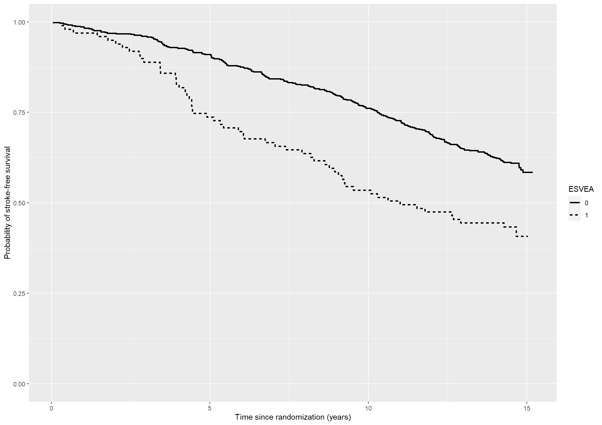
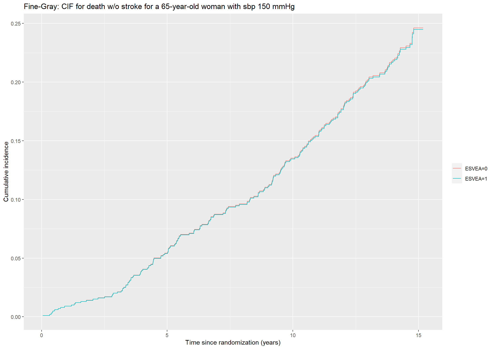
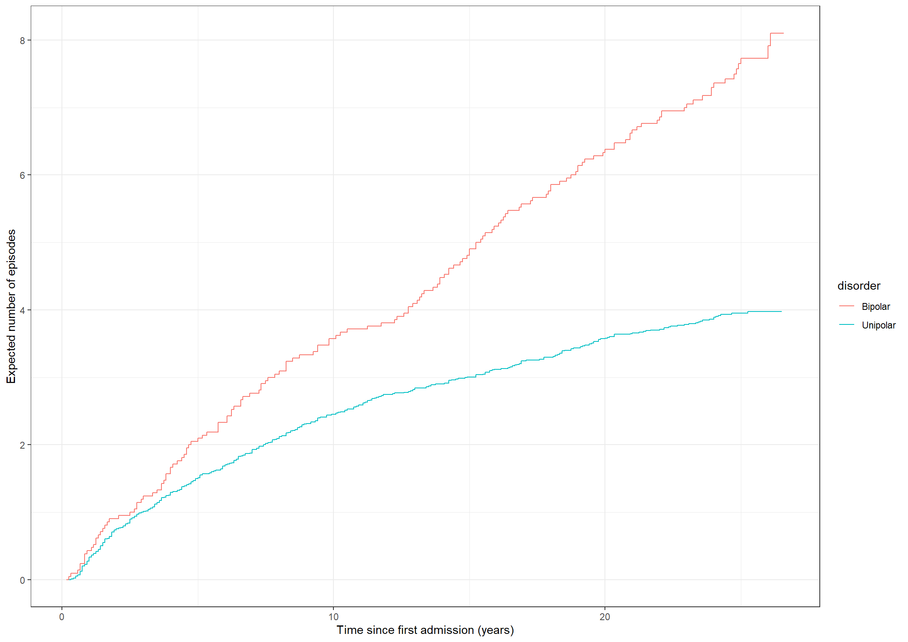

library(riskRegression)subpbc<-subset(pbc3, !is.na(alb))subpbc$tment<-relevel(factor(subpbc$tment),ref="0")cfit <-coxph(Surv(days, fail) ~ tment + alb + log2bili, data = subpbc, method ="breslow",y=TRUE,x=TRUE)atecfit<-ate(cfit, data = subpbc, treatment ="tment", times =2*365.25,cause=1, verbose=F)summary(atecfit,type="meanRisk",se=T)
Average treatment effect
- Treatment : tment (2 levels: "0" "1")
- Event : fail (cause: 1, censoring: 0)
- Time [min;max] : days [1;2150]
- Eval. time : 730.5
number at risk 0 102
number at risk 1 110
Estimation procedure
- Estimator : G-formula
- Uncertainty: Gaussian approximation
where the variance is estimated via the influence function
Testing procedure
- Null hypothesis : given two treatments (A,B) and a specific timepoint, equal risks
- Confidence level : 0.95
Results:
- Standardized risk between time zero and 'time', reported on the scale [0;1] (probability scale)
(average risk when treating all subjects with one treatment)
time tment risk se ci
730 0 0.201 0.0271 [0.15;0.25]
730 1 0.133 0.0217 [0.09;0.18]
risk : estimated standardized risk
ci : pointwise confidence intervals
Code show/hide
summary(atecfit,type="diffRisk",se=T)
Average treatment effect
- Treatment : tment (2 levels: "0" "1")
- Event : fail (cause: 1, censoring: 0)
- Time [min;max] : days [1;2150]
- Eval. time : 730.5
number at risk 0 102
number at risk 1 110
Estimation procedure
- Estimator : G-formula
- Uncertainty: Gaussian approximation
where the variance is estimated via the influence function
Testing procedure
- Null hypothesis : given two treatments (A,B) and a specific timepoint, equal risks
- Confidence level : 0.95
Results:
- Difference in standardized risk (B-A) between time zero and 'time'
reported on the scale [-1;1] (difference between two probabilities)
(difference in average risks when treating all subjects with the experimental treatment (B),
vs. treating all subjects with the reference treatment (A))
time tment=A tment=B difference se ci p.value
730 0 1 -0.0681 0.0259 [-0.12;-0.02] 0.00855
difference : estimated difference in standardized risks
ci : pointwise confidence intervals
p.value : (unadjusted) p-value
Code show/hide
# Survival instead of failure risk1-atecfit$meanRisk$estimate
[1] 0.7989143 0.8670633
Code show/hide
# BootstrapatecfitB<-ate(cfit, data = subpbc, treatment ="tment", times =2*365.25,cause=1, verbose=F, B=100)summary(atecfitB,type="meanRisk",se=T)
Average treatment effect
- Treatment : tment (2 levels: "0" "1")
- Event : fail (cause: 1, censoring: 0)
- Time [min;max] : days [1;2150]
- Eval. time : 730.5
number at risk 0 102
number at risk 1 110
Estimation procedure
- Estimator : G-formula
- Uncertainty: Percentile bootstrap based on 100 bootstrap samples
that were drawn with replacement from the original data.
Testing procedure
- Null hypothesis : given two treatments (A,B) and a specific timepoint, equal risks
- Confidence level : 0.95
Results:
- Standardized risk between time zero and 'time', reported on the scale [0;1] (probability scale)
(average risk when treating all subjects with one treatment)
time tment risk risk.boot se ci
730 0 0.201 0.199 0.0261 [0.15;0.26]
730 1 0.133 0.132 0.0192 [0.10;0.17]
risk : estimated standardized risk
risk.boot : average value over the bootstrap samples
ci : pointwise confidence intervals
Code show/hide
summary(atecfitB,type="diffRisk",se=T)
Average treatment effect
- Treatment : tment (2 levels: "0" "1")
- Event : fail (cause: 1, censoring: 0)
- Time [min;max] : days [1;2150]
- Eval. time : 730.5
number at risk 0 102
number at risk 1 110
Estimation procedure
- Estimator : G-formula
- Uncertainty: Percentile bootstrap based on 100 bootstrap samples
that were drawn with replacement from the original data.
Testing procedure
- Null hypothesis : given two treatments (A,B) and a specific timepoint, equal risks
- Confidence level : 0.95
Results:
- Difference in standardized risk (B-A) between time zero and 'time'
reported on the scale [-1;1] (difference between two probabilities)
(difference in average risks when treating all subjects with the experimental treatment (B),
vs. treating all subjects with the reference treatment (A))
time tment=A tment=B difference difference.boot se ci p.value
730 0 1 -0.0681 -0.0668 0.0239 [-0.12;-0.02] 0
difference : estimated difference in standardized risks
difference.boot : average value over the bootstrap samples
ci : pointwise confidence intervals
p.value : (unadjusted) p-value
Using mets package
Code show/hide
library(mets)cfitmets <-phreg(Surv(days, fail) ~ tment + alb + log2bili, data = subpbc)summary(survivalG(cfitmets, subpbc, time =2*365.25))
library(survival)np_km <-survfit(Surv(days/365.25, status !=0) ~ tment, data = pbc3)print(np_km,rmean=3)
Call: survfit(formula = Surv(days/365.25, status != 0) ~ tment, data = pbc3)
n events rmean* se(rmean) median 0.95LCL 0.95UCL
tment=0 173 46 2.61 0.0633 NA 4.51 NA
tment=1 176 44 2.68 0.0565 NA 4.66 NA
* restricted mean with upper limit = 3
Non-parametric using mets package
Code show/hide
# non-parametric could also be done using mets packagelibrary(mets)out1 <-phreg(Surv(days/365.25,fail)~strata(tment),data=pbc3)rm1 <-resmean.phreg(out1,times=3)summary(rm1)
proc sort data=pbc3 out=pbc3sorted;by tment;run;proc rmstreg data=pbc3sorted tau=3;by tment;model followup*status(0)= / link=linear method=ipcw(strata=tment);run;* Bootstrapping using 'point=';data bootpbc; do sampnum = 1to1000; /* nboot=1000*/ do i = 1to349; /*nobs=349*/x=round(ranuni(0)*349); set pbc3point=x;output; end; end;stop;run;proc sort data=bootpbc out=boot;by sampnum tment;run;proc rmstreg data=boot tau=3;by sampnum tment;model followup*status(0)= / link=linear method=ipcw(strata=tment); ods output parameterestimates=pe;run;proc means data=pe mean stddev; class tment;var estimate;run;
Macro and bootstrap data set
Code show/hide
* Bootstrapping using 'point=';data bootpbc; do sampnum = 1to1000; /* nboot=1000*/ do i = 1to349; /*nobs=349*/x=round(ranuni(0)*349); set pbc3point=x;output; end; end;stop;run;* AUC under stepcurves;%macro areastepby(data,byvar,trt,grp,time,y,tau); dataselect;set&data;where&trt=&grp; run; dataselect;setselect;by&byvar;retain mu oldt oldy;if first.&byvar then do; oldt=0; oldy=1; mu=0; end;if&time>&tau then do;&time=τ&y=oldy; end;ifnot first.&byvar then mu+oldy*(&time-oldt);if last.&byvar then do;if&time<&tau then mu+(&tau-&time)*&y; end; oldy=&y; oldt=&time; run; data last; setselect;by&byvar;if last.&byvar; run;%mend areastepby;
Non-parametric using macro
Code show/hide
proc phreg data=bootpbc noprint;by sampnum;model followup*status(0)=; strata tment; baseline out=survdat survival=km / method=pl;run;%areastepby(survdat,sampnum,tment,0,followup,km,3);title"Placebo";proc means data=last mean stddev;var mu;run;%areastepby(survdat,sampnum,tment,1,followup,km,3);title"CyA";proc means data=last mean stddev;var mu;run;
Cox (38,45) using macro
Code show/hide
data cov; tment=0; alb=38; log2bili=log2(45); output; tment=1; alb=38; log2bili=log2(45); output;run;proc phreg data=bootpbc noprint;by sampnum;model followup*status(0)=tment alb log2bili/rl; baseline out=predsurv survival=surv covariates=cov/ method=breslow;run;%areastepby(predsurv,sampnum,tment,0,followup,surv,3);title"Placebo";proc means data=last mean stddev;var mu;run;%areastepby(predsurv,sampnum,tment,1,followup,surv,3);title"CyA";proc means data=last mean stddev;var mu;run;
Cox (20,90) using macro
Code show/hide
data cov; tment=0; alb=20; log2bili=log2(90); output; tment=1; alb=20; log2bili=log2(90); output;run;proc phreg data=bootpbc noprint;by sampnum;model followup*status(0)=tment alb log2bili/rl; baseline out=predsurv2 survival=surv covariates=cov/ method=breslow;run;%areastepby(predsurv2,sampnum,tment,0,followup,surv,3);title"Placebo";proc means data=last mean stddev;var mu;run;%areastepby(predsurv2,sampnum,tment,1,followup,surv,3);title"CyA";proc means data=last mean stddev;var mu;run;
Cox g-formula using macro
Code show/hide
proc phreg data=bootpbc noprint;by sampnum; class tment (ref='0');model followup*status(0)=tment alb log2bili/rl; baseline out=gsurv survival=surv stderr=se/ method=breslow diradj group=tment;run;%areastepby(gsurv,sampnum,tment,0,followup,surv,3);title"Placebo";proc means data=last mean stddev;var mu;run;%areastepby(gsurv,sampnum,tment,1,followup,surv,3);title"CyA";proc means data=last mean stddev;var mu;run;
Call:
coxph(formula = Surv(fgstart, fgstop, fgstatus) ~ tment + alb +
log2bili + sex + age, data = fg_c1, weights = fgwt, eps = 1e-09)
n= 1068, number of events= 28
coef exp(coef) se(coef) robust se z Pr(>|z|)
tment -0.40756 0.66527 0.40311 0.34977 -1.165 0.2439
alb -0.06960 0.93276 0.03844 0.03005 -2.316 0.0205 *
log2bili 0.61867 1.85646 0.12892 0.09119 6.785 1.16e-11 ***
sex 0.09043 1.09465 0.55193 0.55524 0.163 0.8706
age -0.07507 0.92768 0.02077 0.01590 -4.720 2.36e-06 ***
---
Signif. codes: 0 '***' 0.001 '**' 0.01 '*' 0.05 '.' 0.1 ' ' 1
exp(coef) exp(-coef) lower .95 upper .95
tment 0.6653 1.5031 0.3352 1.3205
alb 0.9328 1.0721 0.8794 0.9894
log2bili 1.8565 0.5387 1.5526 2.2198
sex 1.0946 0.9135 0.3687 3.2501
age 0.9277 1.0780 0.8992 0.9570
Concordance= 0.858 (se = 0.025 )
Likelihood ratio test= 52.17 on 5 df, p=5e-10
Wald test = 78.57 on 5 df, p=2e-15
Score (logrank) test = 56.42 on 5 df, p=7e-11, Robust = 21.26 p=7e-04
(Note: the likelihood ratio and score tests assume independence of
observations within a cluster, the Wald and robust score tests do not).
Code show/hide
* Death without transplantation;proc phreg data=pbc3; class sex (ref='1') tment (ref='0');model days*status(0)=sex tment age log2bili alb / rl eventcode=2;run;* Transplantation;proc phreg data=pbc3; class sex (ref='1') tment (ref='0');model days*status(0)=sex tment age log2bili alb / rl eventcode=1;run;
The function rmtl.ipcw() fit a restricted mean time lost regression model using IPCW with competing risks data.
Code show/hide
### Note: This code is modified from the original 'rmst2reg function' of the### survRM2 package, which was authored by Hajime Uno, Lu Tian, Angel Cronin, ### Chakib Battioui, and Miki Horiguchi, in order to account for competing risks.### Last updated by Sarah Conner on October 22, 2020library(survival)rmtl.ipcw <-function(times, event, eoi=1, tau, cov=NULL, strata=FALSE, group=NULL){if(is.null(group) & strata==TRUE){stop('Please specify a factor variable to statify weights.')}if(is.null(cov)){print('Warning: Fitting intercept-only model.')}# Round event times to avoid issues with survival() package rounding differently y <-round(times,4) id <-1:length(y)# Recode so delta1 reflects event of interest, delta2 reflects all competing events. Assumes 0=censoring. delta1 <-ifelse(event==eoi, 1, 0) delta2 <-ifelse(event!=0& event!=eoi, 1, 0)# Overall quantities x <-cbind(int=rep(1, length(y)), cov) p <-length(x[1,])if(is.null(group)){group <-as.factor(rep(1, length(y)))}# Recode event indicators to reflect status at chosen tau delta1[y>tau] <-0 delta2[y>tau] <-0 y <-pmin(y, tau) y1 <- y*delta1 d0 <-1- (delta1 + delta2) # censoring indicator d0[y==tau] <-0# If follow-up lasts til tau, the event will not count as 'censored' in IPCW weights weights <-NULL## Calculate IPCW weights (option to stratify by group) ## if(strata==TRUE){for(aa in1:length(unique(group))){# Subset the group a <-unique(group)[aa] d0.a <- d0[group==a] delta1.a <- delta1[group==a] y.a <- y[group==a] x.a <- x[group==a,] n.a <-length(d0.a) orig.id.a0 <- orig.id.a <- id[group==a]# Order the event times id.a <-order(y.a) y.a <- y.a[id.a] d0.a <- d0.a[id.a] delta1.a <- delta1.a[id.a] x.a <- x.a[id.a,] orig.id.a <- orig.id.a[id.a]# Derive IPCW fit <-survfit(Surv(y.a, d0.a) ~1) weights.a <- (1-d0.a)/rep(fit$surv, table(y.a))# Need to assign weights accordig to original ID, not ordered by event time linked.weights.a <-cbind(orig.id.a, weights.a, delta1.a, d0.a, y.a) weights <-rbind(weights, linked.weights.a) } } else {# Order the event times id.a <-order(y) y.a <- y[id.a] d0.a <- d0[id.a] delta1.a <- delta1[id.a] x.a <- x[id.a,] orig.id.a <- id[id.a]# Derive IPCW fit <-survfit(Surv(y.a, d0.a) ~1) weights.a <- (1-d0.a)/rep(fit$surv, table(y.a))# Need to assign weights accordig to original ID, not ordered by event time linked.weights.a <-cbind(orig.id.a, weights.a, delta1.a, d0.a, y.a) weights <-rbind(weights, linked.weights.a) }## Fit linear model ## # Link weights to original data frame#colnames(weights) <- c('id', 'weights')#data <- merge(data0, weights, by='id')#summary(lm(tau-y ~ x-1, weights=weights, data=data))# Or, sort weights and use vectors w <- weights[order(weights[, 1]),2] lm.fit <-lm(delta1*(tau-y) ~ x-1, weights=w)## Derive SE ## beta0 <- lm.fit$coef error <- tau - y -as.vector(x %*% beta0) score <- x * w * error# Kappa (sandwich variance components) stratified by group kappa <-NULLfor(aa in1:length(unique(group))){# Subset the group a <-unique(group)[aa] d0.a <- d0[group==a] delta1.a <- delta1[group==a] y.a <- y[group==a] x.a <- x[group==a,] n.a <-length(d0.a) orig.id.a0 <- orig.id.a <- id[group==a] score.a <- score[group==a,]# Kappa calculations for sandwich variance kappa.a <-matrix(0, n.a, p)for(i in1:n.a){ kappa1 <- score.a[i,] kappa2 <-apply(score.a[y.a>=y.a[i],,drop=F], 2, sum)*(d0.a[i])/sum(y.a>=y.a[i]) kappa3 <-rep(0, p)for(k in1:n.a){if(y.a[k]<=y.a[i]){ kappa3 <- kappa3+apply(score.a[y.a>=y.a[k],,drop=F], 2, sum)*(d0.a[k])/(sum(y.a>=y.a[k]))^2 } } kappa.a[i,] <- kappa1+kappa2-kappa3 } kappa <-rbind(kappa, kappa.a) }# Transpose the kappas rbinded from each group gives pxp matrix gamma <-t(kappa) %*% kappa A <-t(x) %*% x varbeta <-solve(A) %*% gamma %*%solve(A) se <-sqrt(diag(varbeta))#--- Return results --- res <-cbind(beta=lm.fit$coef, se=se, cil=lm.fit$coef-(1.96*se), ciu=lm.fit$coef+(1.96*se), z=lm.fit$coef/se, p=2*(1-pnorm(abs(lm.fit$coef/se)))) allres <-list(res=res, varbeta=varbeta)invisible(allres)return(res[,1])}
library(boot)# Transplantationboot.fun <-function(dat, index){bdata <- dat[index,]obj<-rmtl.ipcw(bdata$time,bdata$status,eoi=1,tau=3,cbind(bdata$arm,bdata$alb,bdata$logbili))rmst0<-obj[1]+obj[2]*0+obj[3]*bdata$alb+obj[4]*bdata$logbilirmst1<-obj[1]+obj[2]*1+obj[3]*bdata$alb+obj[4]*bdata$logbilidiff<-rmst1-rmst0res<-cbind(mean(rmst0),mean(rmst1),mean(diff))return(res)}B<-200set.seed(1234)trydata<-as.data.frame(cbind(time,status,x1))bootres <-boot(trydata, boot.fun, R = B)# mean and SDprint("Transplantation")
# Death without transplantationboot.fun <-function(dat, index){bdata <- dat[index,]obj<-rmtl.ipcw(bdata$time,bdata$status,eoi=2,tau=3,cbind(bdata$arm,bdata$alb,bdata$logbili))rmst0<-obj[1]+obj[2]*0+obj[3]*bdata$alb+obj[4]*bdata$logbilirmst1<-obj[1]+obj[2]*1+obj[3]*bdata$alb+obj[4]*bdata$logbilidiff<-rmst1-rmst0res<-cbind(mean(rmst0),mean(rmst1),mean(diff))return(res)}trydata<-as.data.frame(cbind(time,status,x1))bootres <-boot(trydata, boot.fun, R = B)# mean and SDprint("Death without transplantation")
library(survival)options(contrasts=c("contr.treatment", "contr.poly"))# treatcoxph(Surv(time, death ==0) ~ beh, data = provany)
Call:
coxph(formula = Surv(time, death == 0) ~ beh, data = provany)
coef exp(coef) se(coef) z p
beh1 0.03074 1.03122 0.19080 0.161 0.872
beh2 -0.04113 0.95970 0.18910 -0.218 0.828
beh3 0.04131 1.04218 0.20386 0.203 0.839
Likelihood ratio test=0.22 on 3 df, p=0.9751
n= 286, number of events= 211
Code show/hide
# size coxph(Surv(time, death ==0) ~factor(varsize), data = provany)
Call:
coxph(formula = Surv(time, death == 0) ~ factor(varsize), data = provany)
coef exp(coef) se(coef) z p
factor(varsize)2 -0.2324 0.7926 0.1465 -1.586 0.1127
factor(varsize)3 -0.4386 0.6449 0.2327 -1.885 0.0594
Likelihood ratio test=4.77 on 2 df, p=0.0922
n= 286, number of events= 211
Code show/hide
# sexcoxph(Surv(time, death ==0) ~ sex, data = provany)
Call:
coxph(formula = Surv(time, death == 0) ~ sex, data = provany)
coef exp(coef) se(coef) z p
sex 0.07847 1.08163 0.14542 0.54 0.589
Likelihood ratio test=0.29 on 1 df, p=0.588
n= 286, number of events= 211
Code show/hide
# coagcoxph(Surv(time, death ==0) ~ coag, data = provany)
Call:
coxph(formula = Surv(time, death == 0) ~ coag, data = provany)
coef exp(coef) se(coef) z p
coag -0.002827 0.997177 0.002635 -1.073 0.283
Likelihood ratio test=1.18 on 1 df, p=0.2775
n= 272, number of events= 199
(14 observations deleted due to missingness)
Code show/hide
# bilicoxph(Surv(time, death ==0) ~ log2bili, data = provany)
Call:
coxph(formula = Surv(time, death == 0) ~ log2bili, data = provany)
coef exp(coef) se(coef) z p
log2bili 0.07575 1.07870 0.05649 1.341 0.18
Likelihood ratio test=1.77 on 1 df, p=0.1834
n= 275, number of events= 202
(11 observations deleted due to missingness)
Code show/hide
# agecoxph(Surv(time, death ==0) ~ age, data = provany)
Call:
coxph(formula = Surv(time, death == 0) ~ age, data = provany)
coef exp(coef) se(coef) z p
age -0.017105 0.983040 0.005777 -2.961 0.00307
Likelihood ratio test=8.67 on 1 df, p=0.003242
n= 286, number of events= 211
Code show/hide
proc phreg data=cens; class beh (ref='0');modeltime*death(1)=beh;run;proc phreg data=cens; class varsize (ref='1');modeltime*death(1)=varsize;run;proc phreg data=cens; class sex (ref='1');modeltime*death(1)=sex;run;proc phreg data=cens;modeltime*death(1)=coag;run;proc phreg data=cens;modeltime*death(1)=log2bili;run;proc phreg data=cens;modeltime*death(1)=age;run;
# Make dataset ready for mstate # From Out -> In, trans = 1# From Out -> Dead, trans = 2# From In -> Out, trans = 3# From In -> Dead, trans = 4# + update status variablelibrary(dplyr)affectivemstate__ <- affective %>%mutate(statusnew =ifelse(status ==3, 0, 1), trans =case_when(state ==0& status ==1~1, state ==0& status ==2~2, state ==1& status ==0~3, state ==1& status ==2~4, state ==0& status ==3~1, state ==1& status ==3~3))# For each transition, we should have a censoring for the trans to the other stateaffectivemstate_ <- affectivemstate__ %>%mutate(statusnew =0,trans =case_when(trans ==1~2, trans ==2~1, trans ==3~4, trans ==4~3))affectivemstate <-rbind(affectivemstate__, affectivemstate_) %>%arrange(id, start)affectivemstate <- affectivemstate %>%mutate(from =case_when(trans ==1~1, trans ==2~1, trans ==3~2, trans ==4~2), to =case_when(trans ==1~2, trans ==2~3, trans ==3~1, trans ==4~3),starty = start/12, stopy = stop/12 )# Subset data by diseaseaffective0 <-subset(affectivemstate, bip ==0)affective1 <-subset(affectivemstate, bip ==1)# Set-up transition matrixtmat <-matrix(NA, 3, 3)tmat[1, 2:3] <-1:2tmat[2, c(1,3)] <-3:4statenames <-c("Out of hospital", "In hospital", "Dead")dimnames(tmat) <-list(from = statenames, to = statenames)library(mstate)## For unipolar (bip = 0) ----------------------------------- ##attr(affective0, 'class') <-c("msdata","data.frame")attr(affective0, 'trans') <- tmat# Fit empty cox model per transc0 <-coxph(Surv(starty, stopy, statusnew) ~strata(trans), data = affective0)# Make a mstate objectmsf0 <-msfit(object=c0, trans=tmat)pt0 <-probtrans(msf0, predt=0)## For bipolar (bip = 1) ----------------------------------- ##attr(affective1, 'class') <-c("msdata","data.frame")attr(affective1, 'trans') <- tmat# Fit empty cox model per transc1 <-coxph(Surv(starty, stopy, statusnew) ~strata(trans), data = affective1)# Make a mstate objectmsf1 <-msfit(object=c1, trans=tmat)pt1 <-probtrans(msf1, predt=0)regcoefvec <-function(data, tmat, tau) { cx <-coxph(Surv(starty, stopy, statusnew) ~strata(trans), data=data) msf0 <-msfit(object = cx, trans = tmat) pt0 <-probtrans(msf0, predt=0) mat <-ELOS(pt0, tau=tau)return(mat[2,])}set.seed(1234)res <-msboot(theta=regcoefvec, data=affective0, B=100, id="id", tmat=tmat, tau=15)uniest<-regcoefvec(affective0, tmat, 15)uniboots<-matrix(c(mean(res[1,]),sqrt(var(res[1,])),mean(res[2,]),sqrt(var(res[2,])),mean(res[3,]),sqrt(var(res[3,]))),nrow =3, dimnames =list(c("Out of hosp","In hosp","Dead"), c("Years","SD")))uni<-list("estimate"=uniest,"bootstrap"=uniboots)set.seed(1234)res <-msboot(theta=regcoefvec, data=affective1, B=100, id="id", tmat=tmat, tau=15)biest<-regcoefvec(affective0, tmat, 15)biboots<-matrix(c(mean(res[1,]),sqrt(var(res[1,])),mean(res[2,]),sqrt(var(res[2,])),mean(res[3,]),sqrt(var(res[3,]))),nrow =3, dimnames =list(c("Out of hosp","In hosp","Dead"), c("Years","SD")))bi<-list("estimate"=biest,"bootstrap"=biboots)list("Unipolar"=uni,"Bipolar"=bi)
$Unipolar
$Unipolar$estimate
in1 in2 in3
9.589138 2.202036 3.208826
$Unipolar$bootstrap
Years SD
Out of hosp 9.6888785 0.2515182
In hosp 0.4962329 3.1828301
Dead 2.1282913 0.4881871
$Bipolar
$Bipolar$estimate
in1 in2 in3
9.589138 2.202036 3.208826
$Bipolar$bootstrap
Years SD
Out of hosp 12.6037941 0.3523277
In hosp 0.7299104 0.8614208
Dead 1.5347851 0.5616117
# In yearslibrary(dplyr)affective <- affective %>%mutate(starty = start /12, stopy = stop /12) %>%group_by(id) %>%mutate(prevy1 =lag(starty, n =1, default =0), prevy2 =lag(stopy, n =1, default =0),prevy =ifelse(state ==1, prevy2, prevy1))# LWYY model - Mortality treated as censoring subaff<-data.frame(subset(affective, state ==0| status %in%c(2,3)))fit1 <-coxph(Surv(prevy, stopy, status ==1) ~ bip +cluster(id), data = subaff, ties ="breslow")summary(fit1)
Call:
coxph(formula = Surv(prevy, stopy, status == 1) ~ bip, data = subaff,
ties = "breslow", cluster = id)
n= 661, number of events= 542
coef exp(coef) se(coef) robust se z Pr(>|z|)
bip 0.42019 1.52225 0.09446 0.18167 2.313 0.0207 *
---
Signif. codes: 0 '***' 0.001 '**' 0.01 '*' 0.05 '.' 0.1 ' ' 1
exp(coef) exp(-coef) lower .95 upper .95
bip 1.522 0.6569 1.066 2.173
Concordance= 0.535 (se = 0.019 )
Likelihood ratio test= 18.62 on 1 df, p=2e-05
Wald test = 5.35 on 1 df, p=0.02
Score (logrank) test = 20.07 on 1 df, p=7e-06, Robust = 4.15 p=0.04
(Note: the likelihood ratio and score tests assume independence of
observations within a cluster, the Wald and robust score tests do not).
Code show/hide
# Ghosh-Lin model - Mortality treated as competing risklibrary(mets)fit2 <-recreg(Event(prevy, stopy, status) ~ bip +cluster(id),data = subaff, cause =1, cens.code =3, death.code =2)summary(fit2)
theme_general <-theme_bw() +theme(legend.position ="bottom", legend.title=element_blank(),legend.text =element_text(size =20),text =element_text(size =20), axis.text.x =element_text(size =20), axis.text.y =element_text(size =20)) library(mets)xr <-phreg(Surv(prevy, stopy, status ==1) ~strata(bip) +cluster(id),data =subset(affective, state ==0| status %in%c(2,3)))xd <-phreg(Surv(prevy, stopy, status ==2) ~strata(bip) +cluster(id),data =subset(affective, state ==0| status %in%c(2,3)))out <-recurrentMarginal(xr, xd)pout <-data.frame(time = out$cumhaz[,1], mu = out$cumhaz[,2],bip =as.factor(out$strata))NAa_fit <-survfit(Surv(prevy, stopy, status ==1) ~strata(bip),data =subset(affective, state ==0| status %in%c(2,3)),id = id, ctype =1, timefix =FALSE)KM_fit <-survfit(Surv(prevy, stopy, status ==2) ~strata(bip),data =subset(affective, state ==0| status %in%c(2,3)),id = id, timefix =FALSE)# Adjust hat(mu)lS0 <- dplyr::lag(KM_fit$surv[1:(KM_fit$strata[1])], default =1)dA0 <-diff(NAa_fit$cumhaz[1:NAa_fit$strata[1]])mu_adj0 <-cumsum(lS0 *c(0, dA0))lS1 <- dplyr::lag(KM_fit$surv[(KM_fit$strata[1]+1):(KM_fit$strata[1] + KM_fit$strata[2])], default =1)dA1 <-diff(NAa_fit$cumhaz[(KM_fit$strata[1]+1):(KM_fit$strata[1] + KM_fit$strata[2])])mu_adj1 <-cumsum(lS1 *c(0, dA1))plotdata2 <-data.frame(time = KM_fit$time, mu =c(mu_adj0, mu_adj1), bip =c(rep("No", length(mu_adj0)), rep("Yes", length(mu_adj1))))fig4.19<-ggplot(aes(x = time, y = mu, linetype = bip), data = plotdata2) +geom_step(linewidth =1) +xlab("Time since first admission (years)") +ylab("Expected number of episodes") +scale_linetype_manual("Bipolar", values =c("dashed", "solid"),labels=c("Unipolar","Bipolar") ) +scale_x_continuous(expand =expansion(mult =c(0.005, 0.05)), limits =c(0, 30), breaks =seq(0, 30, by =5)) +scale_y_continuous(expand =expansion(mult =c(0.005, 0.05)), limits =c(0, 10), breaks =seq(0, 10, by =2)) + theme_general +theme(legend.box ="vertical",legend.key.size =unit(1.5, 'cm'))fig4.19
Code show/hide
/* Using "fine-gray model" in PHREG gives an alternative solution to the estimator for CMF using the Breslow type estimator for the baseline mean function (see p. 199 in book). The estimator is not exactly the same as Cook-Lawless because of a different procedures for ties of terminating events and censorings. If no ties (or no censorings) it equals Cook & Lawless */proc phreg data=angstprev;where state=0or status=2or status=3;modelstop*status(3)=/entry=prev eventcode=1; strata bip; baseline out=mcfdata1 cif=naa1;run;data mcfdata1;set mcfdata1; cmf=-log(1-naa1); years=stop/12;run;proc gplot data=mcfdata1; plot cmf*years=bip/haxis=axis1 vaxis=axis2; axis1 order=0to30by5 minor=none label=('Years'); axis2 order=0to12by2 minor=none label=(a=90'Expected number of episodes'); symbol1 v=none i=stepjl c=red; symbol2 v=none i=stepjl c=blue;run;quit;/*** Calc Cook & Lawless or (Ghosh & Lin (GL)) estimator for CMF 'by hand' ***//* First create KM data for death */proc phreg data=angstprev noprint;where state=0or status=2or status=3;modelstop*status(13)= / entry=prev; /* status=2=death */ strata bip; baseline out=kmdata survival=km / method=pl ;run;/* Second create NAa data */proc phreg data=angstprev noprint;where state=0or status=2or status=3;modelstop*status(23)= / entry=prev;/* status=1=event */ strata bip; baseline out=nadata cumhaz=na;run;/* Use NA data to calculate dA(u), i.e., increments in NAa */data na;set nadata; dAu=na-lag(na);ifstop=0then dAu=0;keep bip stop dAu na;run;/* merge NAa and KM data */data merged;merge na kmdata;by bip stop;run;/* multiply S(u-) and dA(u) */data fill;set merged;retain _km;ifnot missing(km) then _km=km;else km=_km;/* S(u-) */ S_uminus=lag(km);ifstop=0then S_uminus=1;if dAu=. then dAu=0; GLfactor=S_uminus*dAu;keep bip stop na dAu S_uminus GLfactor;run;data GLdata;set fill;by bip;if first.bip then GL=0;else GL+GLfactor;run;proc sgplot data=GLdata; step x=stop y=GL / group=bip; step x=stop y=na / group=bip;run;
# Make WLW data ready using SAS data - see SAS codeaffectivewlw <-read.csv("data/affectivewlw.csv")affectivewlw <- affectivewlw %>%mutate(bip1 = bip * (stratum ==1), bip2 = bip * (stratum ==2), bip3 = bip * (stratum ==3), bip4 = bip * (stratum ==4))# Composite endpointfit1 <-coxph(Surv(time, dc %in%c(1, 2)) ~ bip1 + bip2 + bip3 + bip4 +cluster(id) +strata(stratum), data = affectivewlw, ties ="breslow")summary(fit1)
Call:
coxph(formula = Surv(time, dc %in% c(1, 2)) ~ bip1 + bip2 + bip3 +
bip4 + strata(stratum), data = affectivewlw, ties = "breslow",
cluster = id)
n= 476, number of events= 434
coef exp(coef) se(coef) robust se z Pr(>|z|)
bip1 0.379171 1.461073 0.244976 0.208531 1.818 0.069 .
bip2 0.290599 1.337228 0.249212 0.255307 1.138 0.255
bip3 0.003218 1.003223 0.253766 0.245542 0.013 0.990
bip4 0.107276 1.113241 0.255085 0.236751 0.453 0.650
---
Signif. codes: 0 '***' 0.001 '**' 0.01 '*' 0.05 '.' 0.1 ' ' 1
exp(coef) exp(-coef) lower .95 upper .95
bip1 1.461 0.6844 0.9709 2.199
bip2 1.337 0.7478 0.8108 2.206
bip3 1.003 0.9968 0.6200 1.623
bip4 1.113 0.8983 0.6999 1.771
Concordance= 0.51 (se = 0.017 )
Likelihood ratio test= 3.67 on 4 df, p=0.5
Wald test = 8.7 on 4 df, p=0.07
Score (logrank) test = 3.97 on 4 df, p=0.4, Robust = 7.94 p=0.09
(Note: the likelihood ratio and score tests assume independence of
observations within a cluster, the Wald and robust score tests do not).
Code show/hide
fit2 <-coxph(Surv(time, dc %in%c(1, 2)) ~ bip +cluster(id) +strata(stratum), data = affectivewlw, ties ="breslow")summary(fit2)
Call:
coxph(formula = Surv(time, dc %in% c(1, 2)) ~ bip + strata(stratum),
data = affectivewlw, ties = "breslow", cluster = id)
n= 476, number of events= 434
coef exp(coef) se(coef) robust se z Pr(>|z|)
bip 0.1927 1.2125 0.1254 0.2037 0.946 0.344
exp(coef) exp(-coef) lower .95 upper .95
bip 1.212 0.8248 0.8133 1.808
Concordance= 0.51 (se = 0.017 )
Likelihood ratio test= 2.27 on 1 df, p=0.1
Wald test = 0.89 on 1 df, p=0.3
Score (logrank) test = 2.37 on 1 df, p=0.1, Robust = 0.95 p=0.3
(Note: the likelihood ratio and score tests assume independence of
observations within a cluster, the Wald and robust score tests do not).
Code show/hide
# Cause-specific hazard of recurrencefit3 <-coxph(Surv(time, dc %in%c(1)) ~ bip1 + bip2 + bip3 + bip4 +cluster(id) +strata(stratum), data = affectivewlw, ties ="breslow")summary(fit3)
Call:
coxph(formula = Surv(time, dc %in% c(1)) ~ bip1 + bip2 + bip3 +
bip4 + strata(stratum), data = affectivewlw, ties = "breslow",
cluster = id)
n= 476, number of events= 290
coef exp(coef) se(coef) robust se z Pr(>|z|)
bip1 0.4951 1.6406 0.2485 0.2017 2.454 0.01412 *
bip2 0.6395 1.8956 0.2593 0.2420 2.642 0.00823 **
bip3 0.5342 1.7060 0.2853 0.2694 1.983 0.04741 *
bip4 0.8793 2.4093 0.3085 0.2832 3.106 0.00190 **
---
Signif. codes: 0 '***' 0.001 '**' 0.01 '*' 0.05 '.' 0.1 ' ' 1
exp(coef) exp(-coef) lower .95 upper .95
bip1 1.641 0.6095 1.105 2.436
bip2 1.896 0.5275 1.180 3.046
bip3 1.706 0.5862 1.006 2.893
bip4 2.409 0.4151 1.383 4.197
Concordance= 0.543 (se = 0.021 )
Likelihood ratio test= 19.5 on 4 df, p=6e-04
Wald test = 16.37 on 4 df, p=0.003
Score (logrank) test = 22.58 on 4 df, p=2e-04, Robust = 12.85 p=0.01
(Note: the likelihood ratio and score tests assume independence of
observations within a cluster, the Wald and robust score tests do not).
Code show/hide
fit4 <-coxph(Surv(time, dc %in%c(1)) ~ bip +cluster(id) +strata(stratum), data = affectivewlw, ties ="breslow")summary(fit4)
Call:
coxph(formula = Surv(time, dc %in% c(1)) ~ bip + strata(stratum),
data = affectivewlw, ties = "breslow", cluster = id)
n= 476, number of events= 290
coef exp(coef) se(coef) robust se z Pr(>|z|)
bip 0.6150 1.8496 0.1359 0.2106 2.921 0.00349 **
---
Signif. codes: 0 '***' 0.001 '**' 0.01 '*' 0.05 '.' 0.1 ' ' 1
exp(coef) exp(-coef) lower .95 upper .95
bip 1.85 0.5407 1.224 2.794
Concordance= 0.543 (se = 0.021 )
Likelihood ratio test= 18.46 on 1 df, p=2e-05
Wald test = 8.53 on 1 df, p=0.003
Score (logrank) test = 21.13 on 1 df, p=4e-06, Robust = 7.89 p=0.005
(Note: the likelihood ratio and score tests assume independence of
observations within a cluster, the Wald and robust score tests do not).
Code show/hide
data angstwlw; set affective;where episode<5and (state=0or status=2or status=3);run;proc sort data=angstwlw; by id; run;data angstwlw4; set angstwlw;by id;time=stop; dc=status; stratum=episode;output; /* if last episode is not #4 then later episodes are either censored (1 or 3) or the 'end in death' (2) */if last.id then do;if episode=3then do;time=stop;if status=1or status=3then dc=0; if status=2then dc=2; stratum=4;output; end;if episode=2then do;time=stop; if status=1or status=3then dc=0; if status=2then dc=2; stratum=3;output; time=stop;if status=1or status=3then dc=0; if status=2then dc=2; stratum=4;output; end;if episode=1then do; time=stop;if status=1or status=3then dc=0; if status=2then dc=2; stratum=2;output; time=stop; if status=1or status=3then dc=0; if status=2then dc=2; stratum=3;output; time=stop;if status=1or status=3then dc=0; if status=2then dc=2; stratum=4;output; end; end;run;/* to use in R */proc export data=angstwlw4 outfile="data/affectivewlw.csv" dbms=csv replace;run;data angstwlw4; set angstwlw4; bip1=bip*(stratum=1); bip2=bip*(stratum=2); bip3=bip*(stratum=3); bip4=bip*(stratum=4);run;/* composite end point */proc phreg data=angstwlw4 covs(aggregate);modeltime*dc(03)=bip1 bip2 bip3 bip4; strata stratum; id id; bip: test bip1=bip2=bip3=bip4;run;/* Joint model */proc phreg data=angstwlw4 covs(aggregate);modeltime*dc(03)=bip; strata stratum; id id;run;/* Cause-spec. hazards for 1.,2.,3.,4. event */proc phreg data=angstwlw4 covs(aggregate);modeltime*dc(023)=bip1 bip2 bip3 bip4; strata stratum; id id; bip: test bip1=bip2=bip3=bip4;run;/* Joint model */proc phreg data=angstwlw4 covs(aggregate);modeltime*dc(023)=bip; strata stratum; id id;run;
Call:
coxph(formula = Surv(stop, status == 3) ~ bip, data = cens)
coef exp(coef) se(coef) z p
bip -0.4844 0.6161 0.3738 -1.296 0.195
Likelihood ratio test=1.8 on 1 df, p=0.18
n= 119, number of events= 41
/* Using "fine-gray model" in PHREG gives an alternative solution to the estimator for CMF using the Breslow type estimator for the baseline mean function (see p. 199 in book). The estimator is not exactly the same as Cook-Lawless because of a different procedures for ties of terminating events and censorings. If no ties (or no censorings) it equals Cook & Lawless */* NELSON-AALEN;proc phreg data=leader_mi noprint;modelstop*status(02)=/entry=start; id id; strata treat; baseline out=na_data cumhaz=naa;run;data na_est;set na_data; type = "Nelson-Aalen"; cumevent = naa; treat_type = trim(treat) || ", " || type; run; * COOK & LAWLESS (GHOSH & LIN);proc phreg data=leader_mi noprint;model (start, stop)*status(0)=/eventcode=1; strata treat; baseline out=gl_data cif=cuminc;run;data gl_est;set gl_data; type = "Ghosh & Lin"; cumevent = -log(1-cuminc); treat_type = trim(treat) || ", " || type; run; data comb; set na_est gl_est; time = stop/(365.25/12);drop naa cuminc;run;proc sgplot data=comb; step x=time y=cumevent/group=treat_type justify=left; xaxis grid values=(0to60by12); yaxis grid values=(0to0.12by0.02);labeltime="Time since randomisation (months)";label cumevent="Expected number events per subject"; run; /*** Calc Cook & Lawless or (Ghosh & Lin (GL)) estimator for CMF by hand ***//* First create KM data for death */proc phreg data=leader_mi noprint;modelstop*status(01)= / entry=start; /* status=2=death */ strata treat; baseline out=kmdata survival=km / method=pl ;run;/* Second create NAa data */proc phreg data=leader_mi noprint;modelstop*status(02)= / entry=start; /* status=1=event */ strata treat; baseline out=nadata cumhaz=na;run;/* Use NA data to calculate dA(u), i.e., increments in NAa */data na;set nadata; dAu=na-lag(na);ifstop=0then dAu=0;keep treat stop dAu na;run;/* merge NAa and KM data */data merged;merge na kmdata;by treat stop;run;/* multiply S(u-) and dA(u) */data fill;set merged;retain _km;ifnot missing(km) then _km=km;else km=_km;/* S(u-) */ S_uminus=lag(km);ifstop=0then S_uminus=1;if dAu=. then dAu=0; GLfactor=S_uminus*dAu;keep treat stop na dAu S_uminus GLfactor;run;data GLdata;set fill;by treat;if first.treat then GL=0;else GL+GLfactor;time = stop/(365.25/12);run;proc sgplot data=GLdata; step x=time y=na / group=treat; step x=time y=GL / group=treat; xaxis grid values=(0to60by12); yaxis grid values=(0to0.12by0.02);labeltime="Time since randomisation (months)";label na="Expected number events per subject"; run;
Call:
coxph(formula = Surv(start, stop, status == 2) ~ factor(treat),
data = leader_mi, ties = "breslow")
coef exp(coef) se(coef) z p
factor(treat)0 0.16627 1.18090 0.06973 2.385 0.0171
Likelihood ratio test=5.71 on 1 df, p=0.01692
n= 10120, number of events= 828
Code show/hide
proc phreg data=leader_mi; class treat(ref="1");model (start,stop)*status(0,1) = treat / rl;run;
library(ggplot2)# General themetheme_general <-theme_bw() +theme(legend.position ="bottom", text =element_text(size =20), axis.text.x =element_text(size =20), axis.text.y =element_text(size =20)) library(survival)# Relapse-free survival fit1 <-survfit(Surv(intxrel, state0 !=0) ~1, data = bmt)# relapserequire(mets)fit2 <-cif(Event(intxrel, state0) ~1, data = bmt, cause =1)# death in remissionfit3 <-cif(Event(intxrel, state0) ~1, data = bmt, cause =2)# overall survivalfit4 <-survfit(Surv(intxsurv, dead ==1) ~1, data = bmt)# We need the same time for all probabilitiesrequire(dplyr)require(tidyr)m1 <-stepfun(x = fit1$time, y =c(1, fit1$surv)) m2 <-stepfun(x = fit2$times, y =c(0, fit2$mu))m3 <-stepfun(x = fit3$times, y =c(0, fit3$mu))m4 <-stepfun(x = fit4$time, y =c(0, 1-fit4$surv))unitimes <-sort(unique(c(fit1$time, fit2$times, fit3$times, fit4$time)))m <-data.frame(time = unitimes, q0 =m1(unitimes),c1 =m2(unitimes), c2 =m3(unitimes), c23 =m4(unitimes))m$q2 <-m$c2m$q3 <- m$c23 - m$c2m$q1 <- m$c1 - m$q3m$sum <-with(m, q0+q1+q2+q3)m$prev <-with(m, q1 / (q0 + q1))# Prepare data for plottingplotdata <-with(m, data.frame(time =c(time, time), prob =c(prev, q1),type =c(rep("Prevalence of relapse", length(time)), rep("Probability of being alive with relapse",length(time)))))# Create Figurefig4.15<-ggplot(aes(x = time, y = prob, linetype = type), data = plotdata) +geom_step(linewidth =1) +scale_linetype_discrete("Type") +xlab("Time since bone marrow transplantation (months)") +ylab("Probability") +scale_x_continuous(expand =expansion(mult =c(0.001, 0.05)), limits =c(0, 156), breaks =seq(0, 156, by =12)) +scale_y_continuous(expand =expansion(mult =c(0.001, 0.05)), limits =c(0, 0.05), breaks =seq(0, 0.05, 0.01)) + theme_general +theme(legend.box ="vertical",text =element_text(size=21), legend.key.size =unit(1, 'cm'))fig4.15
Code show/hide
proc phreg data=bmt noprint; /* Relapse-free surv */model intxrel*state0(0)=; baseline out=surv survival=km;run;proc phreg data=bmt noprint; /* Relapse */model intxrel*state0(0)=/eventcode=1; baseline out=cif1 cif=cif1;run;proc phreg data=bmt noprint; /* Death in remission */model intxrel*state0(0)=/eventcode=2; baseline out=cif2 cif=cif2;run;proc phreg data=bmt noprint; /* Overall surv. */model intxsurv*dead(0)=/eventcode=1; baseline out=dead cif=cif23;run;/* We need the same time variable for all probabilities */data dead; set dead; time=intxsurv; run;data surv; set surv; time=intxrel; run;data cif1; set cif1; time=intxrel; run;data cif2; set cif2; time=intxrel; run;data all; merge surv cif1 cif2 dead; bytime; run;data allrev; set all;bytime;retain last1 last2 last3 last4;if km=. then rfs=last1; if km ne . then rfs=km; if cif1=. then c1=last2; if cif1 ne . then c1=cif1;if cif2=. then c2=last3; if cif2 ne . then c2=cif2;if cif23=. then c23=last4; if cif23 ne . then c23=cif23;output; last1=rfs; last2=c1; last3=c2; last4=c23;run;data allrev; set allrev; q0=rfs; q2=c2; q3=c23-c2; q1=c1-q3; sum=q0+q1+q2+q3; prev=q1/(q0+q1); tment=0;run;proc gplot data=allrev; plot prev*time q1*time/overlay haxis=axis1 vaxis=axis2; axis1 order=0to150by10 minor=none label=('Months'); axis2 order=0to0.05by0.01 minor=none label=(a=90'Relapse prev. and prob.'); symbol1 v=none i=stepjl c=blue; symbol2 v=none i=stepjl c=red;run;quit;
In-text p. 133: Expected time lost
Important
Missing for R - but should be possible with mstate or survival?
/* Bootstrap */data bootbmt; do sampnum = 1to1000; /* nboot=1000*/ do i = 1to2009; /*nobs=2009*/x=round(ranuni(0)*2009); /*nobs=2009*/set bmtpoint=x;output; end; end;stop;run;%macro areastepby(data,byvar,beh,grp,tid,y,tau); dataselect;set&data;where&beh=&grp; run; dataselect;setselect;by&byvar;retain mu oldt oldy;if first.&byvar then do oldt=0; oldy=1; mu=0; end;if&tid>&tau then do;&tid=τ&y=oldy; end;ifnot first.&byvar then mu+oldy*(&tid-oldt);if last.&byvar then do;if&tid<&tau then mu+(&tau-&tid)*&y; end; oldy=&y; oldt=&tid; run; data last;setselect;by&byvar;if last.&byvar; run;%mend areastepby;proc phreg data=bootbmt noprint; /* Relapse-free surv */by sampnum;model intxrel*state0(0)=;baseline out=surv survival=km;run;proc phreg data=bootbmt noprint; /* Relapse */by sampnum;model intxrel*state0(0)=/eventcode=1;baseline out=cif1 cif=cif1;run;proc phreg data=bootbmt noprint; /* Death in remission */by sampnum;model intxrel*state0(0)=/eventcode=2;baseline out=cif2 cif=cif2;run;proc phreg data=bootbmt noprint; /* Overall surv. */by sampnum;model intxsurv*dead(0)=/eventcode=1;baseline out=dead cif=cif23;run;data dead; set dead; time=intxsurv; drop intxsurv; run; data surv; set surv; time=intxrel; drop intxrel; run;data cif1; set cif1; time=intxrel; drop intxrel; run;data cif2; set cif2; time=intxrel; drop intxrel; run;data all; merge surv cif1 cif2 dead ; by sampnum time; run;data allrev; set all;by sampnum time; retain last1 last2 last3 last4;if km=. then rfs=last1; if km ne . then rfs=km; if cif1=. then c1=last2; if cif1 ne . then c1=cif1;if cif2=. then c2=last3; if cif2 ne . then c2=cif2;if cif23=. then c23=last4; if cif23 ne . then c23=cif23;output;last1=rfs; last2=c1; last3=c2; last4=c23;run;data allrev; set allrev;q0=rfs; q2=c2; q3=c23-c2; q1=c1-q3; sum=q0+q1+q2+q3; prev=q1/(q0+q1); tment=0;run;%areastepby(allrev,sampnum,tment,0,time,q0,120);proc means data=last mean stddev;var mu;run;/* macro need to be changed for cuminc (start in 0) */%macro areastepby0(data,byvar,beh,grp,tid,y,tau); dataselect;set&data;where&beh=&grp; run; dataselect;setselect;by&byvar;retain mu oldt oldy;if first.&byvar then do oldt=0; oldy=0; mu=0; end;if&tid>&tau then do;&tid=τ&y=oldy; end;ifnot first.&byvar then mu+oldy*(&tid-oldt);if last.&byvar then do;if&tid<&tau then mu+(&tau-&tid)*&y; end; oldy=&y; oldt=&tid; run; data last;setselect;by&byvar;if last.&byvar; run;%mend areastepby;%areastepby0(allrev,sampnum,tment,0,time,q1,120);proc means data=last mean stddev;var mu;run;%areastepby0(allrev,sampnum,tment,0,time,c23,120);proc means data=last mean stddev;var mu;run;%areastepby0(allrev,sampnum,tment,0,time,q2,120);proc means data=last mean stddev;var mu;run;%areastepby0(allrev,sampnum,tment,0,time,q3,120);proc means data=last mean stddev;var mu;run;
bmt$age10<-bmt$age/10summary(coxph(Surv(intxrel, rel ==1) ~ bmonly + all + age, data = bmt, ties ="breslow"))
Call:
coxph(formula = Surv(intxrel, rel == 1) ~ bmonly + all + age,
data = bmt, ties = "breslow")
n= 2009, number of events= 259
coef exp(coef) se(coef) z Pr(>|z|)
bmonly -0.107627 0.897962 0.134487 -0.800 0.424
all 0.548871 1.731297 0.129307 4.245 2.19e-05 ***
age -0.004487 0.995523 0.004440 -1.011 0.312
---
Signif. codes: 0 '***' 0.001 '**' 0.01 '*' 0.05 '.' 0.1 ' ' 1
exp(coef) exp(-coef) lower .95 upper .95
bmonly 0.8980 1.1136 0.6899 1.169
all 1.7313 0.5776 1.3437 2.231
age 0.9955 1.0045 0.9869 1.004
Concordance= 0.576 (se = 0.018 )
Likelihood ratio test= 20.61 on 3 df, p=1e-04
Wald test = 21.57 on 3 df, p=8e-05
Score (logrank) test = 22.12 on 3 df, p=6e-05
Code show/hide
summary(coxph(Surv(intxrel, rel ==1) ~ bmonly + all + age +cluster(team), data = bmt, ties ="breslow"))
Call:
coxph(formula = Surv(intxrel, rel == 1) ~ bmonly + all + age,
data = bmt, ties = "breslow", cluster = team)
n= 2009, number of events= 259
coef exp(coef) se(coef) robust se z Pr(>|z|)
bmonly -0.107627 0.897962 0.134487 0.137880 -0.781 0.4350
all 0.548871 1.731297 0.129307 0.173916 3.156 0.0016 **
age -0.004487 0.995523 0.004440 0.007486 -0.599 0.5489
---
Signif. codes: 0 '***' 0.001 '**' 0.01 '*' 0.05 '.' 0.1 ' ' 1
exp(coef) exp(-coef) lower .95 upper .95
bmonly 0.8980 1.1136 0.6853 1.177
all 1.7313 0.5776 1.2312 2.434
age 0.9955 1.0045 0.9810 1.010
Concordance= 0.576 (se = 0.022 )
Likelihood ratio test= 20.61 on 3 df, p=1e-04
Wald test = 16.34 on 3 df, p=0.001
Score (logrank) test = 22.12 on 3 df, p=6e-05, Robust = 13.19 p=0.004
(Note: the likelihood ratio and score tests assume independence of
observations within a cluster, the Wald and robust score tests do not).
Code show/hide
# Relapse-free survivalsummary(coxph(Surv(intxrel, state0 !=0) ~ bmonly + all + age, data = bmt, ties ="breslow"))
Call:
coxph(formula = Surv(intxrel, state0 != 0) ~ bmonly + all + age,
data = bmt, ties = "breslow")
n= 2009, number of events= 764
coef exp(coef) se(coef) z Pr(>|z|)
bmonly -0.161079 0.851225 0.077445 -2.080 0.0375 *
all 0.454636 1.575599 0.077733 5.849 4.95e-09 ***
age 0.016917 1.017061 0.002588 6.537 6.28e-11 ***
---
Signif. codes: 0 '***' 0.001 '**' 0.01 '*' 0.05 '.' 0.1 ' ' 1
exp(coef) exp(-coef) lower .95 upper .95
bmonly 0.8512 1.1748 0.7313 0.9908
all 1.5756 0.6347 1.3529 1.8349
age 1.0171 0.9832 1.0119 1.0222
Concordance= 0.588 (se = 0.011 )
Likelihood ratio test= 81.95 on 3 df, p=<2e-16
Wald test = 81.52 on 3 df, p=<2e-16
Score (logrank) test = 82.07 on 3 df, p=<2e-16
Code show/hide
summary(coxph(Surv(intxrel, state0 !=0) ~ bmonly + all + age +cluster(team), data = bmt, ties ="breslow"))
Call:
coxph(formula = Surv(intxrel, state0 != 0) ~ bmonly + all + age,
data = bmt, ties = "breslow", cluster = team)
n= 2009, number of events= 764
coef exp(coef) se(coef) robust se z Pr(>|z|)
bmonly -0.161079 0.851225 0.077445 0.077240 -2.085 0.037 *
all 0.454636 1.575599 0.077733 0.078077 5.823 5.78e-09 ***
age 0.016917 1.017061 0.002588 0.003328 5.083 3.71e-07 ***
---
Signif. codes: 0 '***' 0.001 '**' 0.01 '*' 0.05 '.' 0.1 ' ' 1
exp(coef) exp(-coef) lower .95 upper .95
bmonly 0.8512 1.1748 0.7316 0.9904
all 1.5756 0.6347 1.3520 1.8361
age 1.0171 0.9832 1.0104 1.0237
Concordance= 0.588 (se = 0.013 )
Likelihood ratio test= 81.95 on 3 df, p=<2e-16
Wald test = 52.58 on 3 df, p=2e-11
Score (logrank) test = 82.07 on 3 df, p=<2e-16, Robust = 47.68 p=2e-10
(Note: the likelihood ratio and score tests assume independence of
observations within a cluster, the Wald and robust score tests do not).
Code show/hide
# overall survivalsummary(coxph(Surv(intxsurv, dead !=0) ~ bmonly + all + age, data = bmt, ties ="breslow"))
Call:
coxph(formula = Surv(intxsurv, dead != 0) ~ bmonly + all + age,
data = bmt, ties = "breslow")
n= 2009, number of events= 737
coef exp(coef) se(coef) z Pr(>|z|)
bmonly -0.160104 0.852055 0.079035 -2.026 0.0428 *
all 0.405480 1.500022 0.079556 5.097 3.45e-07 ***
age 0.017286 1.017437 0.002636 6.558 5.45e-11 ***
---
Signif. codes: 0 '***' 0.001 '**' 0.01 '*' 0.05 '.' 0.1 ' ' 1
exp(coef) exp(-coef) lower .95 upper .95
bmonly 0.8521 1.1736 0.7298 0.9948
all 1.5000 0.6667 1.2835 1.7531
age 1.0174 0.9829 1.0122 1.0227
Concordance= 0.59 (se = 0.011 )
Likelihood ratio test= 76.65 on 3 df, p=<2e-16
Wald test = 76.05 on 3 df, p=<2e-16
Score (logrank) test = 76.57 on 3 df, p=<2e-16
Code show/hide
summary(coxph(Surv(intxsurv, dead !=0) ~ bmonly + all + age +cluster(team), data = bmt, ties ="breslow"))
Call:
coxph(formula = Surv(intxsurv, dead != 0) ~ bmonly + all + age,
data = bmt, ties = "breslow", cluster = team)
n= 2009, number of events= 737
coef exp(coef) se(coef) robust se z Pr(>|z|)
bmonly -0.160104 0.852055 0.079035 0.080788 -1.982 0.0475 *
all 0.405480 1.500022 0.079556 0.077594 5.226 1.74e-07 ***
age 0.017286 1.017437 0.002636 0.003339 5.177 2.26e-07 ***
---
Signif. codes: 0 '***' 0.001 '**' 0.01 '*' 0.05 '.' 0.1 ' ' 1
exp(coef) exp(-coef) lower .95 upper .95
bmonly 0.8521 1.1736 0.7273 0.9982
all 1.5000 0.6667 1.2884 1.7464
age 1.0174 0.9829 1.0108 1.0241
Concordance= 0.59 (se = 0.013 )
Likelihood ratio test= 76.65 on 3 df, p=<2e-16
Wald test = 48.78 on 3 df, p=1e-10
Score (logrank) test = 76.57 on 3 df, p=<2e-16, Robust = 45.26 p=8e-10
(Note: the likelihood ratio and score tests assume independence of
observations within a cluster, the Wald and robust score tests do not).
Code show/hide
/* Relapse, relapse-free and overall survival without and with adjustment for center */proc phreg data=bmt; class bmonly(ref="0") all(ref="0");model intxrel*rel(0)=bmonly all age;run;proc phreg data=bmt covs(aggregate); class bmonly(ref="0") all(ref="0") team;model intxrel*rel(0)=bmonly all age; id team;run;proc phreg data=bmt; class bmonly(ref="0") all(ref="0");model intxrel*state0(0)=bmonly all age;run;proc phreg data=bmt covs(aggregate); class bmonly(ref="0") all(ref="0");model intxrel*state0(0)=bmonly all age; id team;run;proc phreg data=bmt; class bmonly(ref="0") all(ref="0");model intxsurv*dead(0)=bmonly all age;run;proc phreg data=bmt covs(aggregate); class bmonly(ref="0") all(ref="0");model intxsurv*dead(0)=bmonly all age; id team;run;
Consider the data from the Copenhagen Holter study and estimate the probabilities of stroke-free survival for subjects with or without ESVEA using the Kaplan-Meier estimator.
To estimate the probability of stroke-free survival for subjects with or without ESVEA using the Kaplan-Meier estimator we use the survfit function from the survival package.
Code show/hide
# Kaplan-Meier estimate of the survival functionskm41 <-survfit(formula =Surv(timestrokeordeath, strokeordeath) ~ esvea, data = chs_data)kmdata41 <-data.frame(time = km41$time,surv = km41$surv, esvea =c(rep(names(km41$strata)[1], km41$strata[1]),rep(names(km41$strata)[2], km41$strata[2])))
Then, we can plot the Kaplan-Meier estimates of the survival probabilities against time.
Code show/hide
# Plotting the Kaplan-Meier estimate(fig41 <-ggplot(data = kmdata41) +geom_step(aes(x = time, y = surv, linetype = esvea), size =1) +scale_linetype_discrete("ESVEA", labels =c("0", "1")) +ylim(c(0,1)) +xlab("Time since randomization (years)") +ylab("Probability of stroke-free survival"))

Code show/hide
* We must first load the data;proc import out = chs_data datafile = 'data/cphholter.csv' dbms= csv replace; getnames=yes;run;* We will convert the time variables (timeafib, timestroke, and timedeath) from days to years;* Furthermore, we add variables for the composite end-point of stroke or death without stroke;data chs_data;set chs_data; timeafib = timeafib/365.25; timestroke = timestroke/365.25; timedeath = timedeath/365.25; timestrokeordeath = timedeath;if stroke = 1then timestrokeordeath = timestroke; strokeordeath = death;if stroke = 1then strokeordeath = 1;run;* We estimate the Kaplan-Meier survival function for subjects with or without ESVEA with the phreg procedure where 'esvea' is added in the strata statement. The result is saved as 'survdat'.;title"4.1: Stroke-free survival probabilities estimated with the Kaplan-Meier estimator";proc phreg data=chs_data;model timestrokeordeath*strokeordeath(0)=; strata esvea; baseline out=survdat survival=km;run;* Then the estimates are plotted using the gplot procedure;proc gplot data=survdat;plot km*timestrokeordeath=esvea/haxis=axis1 vaxis=axis2; axis1 order=0to16by2label=('Years'); axis2 order=0to1by0.1label=(a=90'Survival probability'); symbol1 i=stepjl c=red; symbol2 i=stepjl c=blue;run;quit;
Exercise 4.2
Consider the Cox model for stroke-free survival in the Copenhagen Holter study including the covariates ESVEA, sex, age, and systolic blood pressure (Exercise 2.4).
1.
Estimate the survival functions for a female subject aged 65 years and with systolic blood pressure equal to 150 mmHg either with or without ESVEA.
The Cox model including ESVEA, sex, age, and systolic blood pressure is fitted using the coxph function from the survival package as first done in exercise 2.4.1.
Code show/hide
# Cox model for the composite end-point stroke or death with covariates ESVEA, sex, age, and systolic blood pressurecox241 <-coxph(formula =Surv(timestrokeordeath, strokeordeath) ~ esvea + sex + age + sbp , data = chs_data, method ="breslow")summary(cox241)
Call:
coxph(formula = Surv(timestrokeordeath, strokeordeath) ~ esvea +
sex + age + sbp, data = chs_data, method = "breslow")
n= 675, number of events= 285
(3 observations deleted due to missingness)
coef exp(coef) se(coef) z Pr(>|z|)
esvea 0.318284 1.374767 0.152587 2.086 0.0370 *
sex 0.577585 1.781731 0.126946 4.550 5.37e-06 ***
age 0.076658 1.079673 0.009362 8.189 2.64e-16 ***
sbp 0.005152 1.005165 0.002438 2.113 0.0346 *
---
Signif. codes: 0 '***' 0.001 '**' 0.01 '*' 0.05 '.' 0.1 ' ' 1
exp(coef) exp(-coef) lower .95 upper .95
esvea 1.375 0.7274 1.019 1.854
sex 1.782 0.5613 1.389 2.285
age 1.080 0.9262 1.060 1.100
sbp 1.005 0.9949 1.000 1.010
Concordance= 0.672 (se = 0.016 )
Likelihood ratio test= 99.45 on 4 df, p=<2e-16
Wald test = 104.1 on 4 df, p=<2e-16
Score (logrank) test = 110 on 4 df, p=<2e-16
We will now estimate the survival functions for a 65-year-old female (sex = 0) with a systolic blood pressure of 150mmHg with or without ESVEA. The values of the covariates are stored in the data frame covar. The survival function is then found using the survfit function with the formula argument given by the Cox model and the newdata argument given by the data frame covar.
Code show/hide
# Defining the covariatescovar <-data.frame(esvea =c(0,1), sex =0, age =65, sbp =150)# Estimate of the survival function given the covariate valuessurv421 <-survfit(cox241, newdata = covar)
Finally, the survival functions are plotted
Code show/hide
# Plotting the predicted survival probabilities.(plot421 <-ggplot() +geom_step(aes(x = surv421$time, y = surv421$surv[,1], color ="ESVEA=0")) +geom_step(aes(x = surv421$time, y = surv421$surv[,2], color ="ESVEA=1")) +theme(legend.title=element_blank()) +ylab("Probability") +xlab("Time since randomization (years)") +ggtitle("Stroke-free survival for a 65-year-old woman with a sbp of 150mmHg") +ylim(c(0,1)))
Code show/hide
* To estimate the stroke-free survival functions for a 65-year old woman with a systolic blood pressure of 150mmHg with or without ESVEA we will first create a data frame 'cov' with the desired values of the covariate.;data cov; esvea = 0; sex = 0; age = 65; sbp = 150; output; esvea = 1; sex = 0; age = 65; sbp = 150; output;run;* Then, a Cox model including ESVEA, sex, age, and systolic blood pressure is fitted with the phreg procedure and the stroke-free survival functions for subjects with values according to 'cov' are saved as 'survdata'.;title"4.2: Stroke-free survival for a 65-year old woman with sbp = 150mmHg";proc phreg data=chs_data;model timestrokeordeath*strokeordeath(0)=esvea sex age sbp; baseline out=survdata survival=surv covariates = cov;run;* Finally, the survival functions are plotted using the gplot procedure;proc gplot data=survdata; plot surv*timestrokeordeath=esvea/haxis=axis1 vaxis=axis2; axis1 order=0to16by2label=('Years'); axis2 order=0to1by0.1label=(a=90'Stroke-free survival probability'); symbol1 i=stepjl c=blue; symbol2 i=stepjl c=red;run;quit;
2.
Estimate the survival functions for patients with or without ESVEA using the g-formula.
To estimate the survival functions using the g-formula, two predictions are made for each subject, i: one setting ESVEA \((Z_1)\) to 0, and one setting ESVEA to 1, while keeping the observed values of sex, age, and systolic blood pressure \((Z_2, Z_3, Z_4)\). The g-formula estimate is then
\[
\hat{S}_j(t) = \frac{1}{n}\sum_{i}\hat{S}(t|Z_1 = j, Z_{2i}, Z_{3i}, Z_{4i}), j = 0,1
\] Thus, we will make two new data frames corresponding to the two settings, i.e. ESVEA = 0 (chs_covar0) or ESVEA = 1 (chs_covar1) and all other covariates equal to the observed values. Then, the two predictions of the survival functions for each subject are found using the survfit function, and the average of these predictions with or without ESVEA are taken to obtaian the g-formula estimate.
Code show/hide
# Creating data sets with or without ESVEA while keeping the observed values of sex, age, and sbp for all subjectschs_covar0 <-data.frame(esvea =0, sex = chs_data$sex, age = chs_data$age, sbp = chs_data$sbp)chs_covar1 <-data.frame(esvea =1, sex = chs_data$sex, age = chs_data$age, sbp = chs_data$sbp)# Predicting the survival functions for all rows in chs_covar0 and chs_covar1pred0_422 <-survfit(cox241, newdata = chs_covar0)pred1_422 <-survfit(cox241, newdata = chs_covar1)# Taking the average prediction at each transition timesurv0_422 <-rowMeans(pred0_422$surv, na.rm =TRUE)surv1_422 <-rowMeans(pred1_422$surv, na.rm =TRUE)
The survival functions estimated using the g-formula are then plotted against time.
Code show/hide
# Plotting the predicted survival probabilities (g-formula).(plot422 <-ggplot() +geom_step(aes(x = pred0_422$time, y = surv0_422, color ="ESVEA=0")) +geom_step(aes(x =pred1_422$time, y = surv1_422, color ="ESVEA=1")) +theme(legend.title=element_blank()) +ylab("Probability") +xlab("Time since randomization (years)") +ggtitle("Survival function for stroke-free survival (g-formula)")) +ylim(c(0,1))
Code show/hide
* A Cox model including ESVEA, sex, age, and systolic blood pressure is fitted and 'diradj group = esvea' is added to obtain the predicted survival functions for patients with or without ESVEA using the g-formula. The data is saved as 'gsurv'.;title"4.2: Cox model for the outcome stroke-free survival including ESVEA, sex, age, and systolic blood pressure";proc phreg data=chs_data; class esvea (ref = '0');model timestrokeordeath*strokeordeath(0)=esvea sex age sbp; baseline out=gsurv survival=surv / diradj group=esvea;run;* The survival functions are then plotted using the gplot procedure;title"4.2: Stroke-free survival probabilities estimated using the G-formula";proc gplot data=gsurv; plot surv*timestrokeordeath=esvea/haxis=axis1 vaxis=axis2; axis1 order=0to16by2 minor=none label=('Years'); axis2 order=0to1by0.1 minor=none label=(a=90'Estimated survival function (g-formula)'); symbol1 v=none i=stepjl c=blue; symbol2 v=none i=stepjl c=red;run;quit;
Exercise 4.3
Consider the data from the Copenhagen Holter study and fit a linear model for the 3-year restricted mean time to the composite end-point stroke or death including ESVEA, sex, age, and systolic blood pressure.
We will use the rmst2 function from the survRM2 package to fit a linear model for the 3-year restricted mean time to the composite end-point stroke or death including ESVEA, sex, age, and systolic blood pressure. We must include the arguments time, status, arm, tau and covariates which in this case are timestrokeordeath, strokeordeath, esvea, 3 and sex,age, and systolic blood pressure respectively.
Code show/hide
# 3-year restricted mean time to the composite end-point stroke or death# Attention must be restricted to subjects with complete covariate data (sbp).newchs <-subset(chs_data,!is.na(sbp))rmst <-rmst2(time = newchs$timestrokeordeath, status = newchs$strokeordeath, arm = newchs$esvea, tau =3, covariates = newchs[, c(8,9,17)] )rmst$RMST.difference.adjusted
coef se(coef) z p lower .95
intercept 3.3551746975 0.2078355430 16.1434115 0.00000000 2.9478245185
arm -0.0273741987 0.0527081358 -0.5193543 0.60351367 -0.1306802466
sex -0.0540324232 0.0352191476 -1.5341775 0.12498600 -0.1230606841
age -0.0073221791 0.0028486997 -2.5703583 0.01015934 -0.0129055280
sbp 0.0005144224 0.0006748332 0.7622955 0.44588365 -0.0008082265
upper .95
intercept 3.762524877
arm 0.075931849
sex 0.014995838
age -0.001738830
sbp 0.001837071
Thus, we obtain the following model for the 3-year restricted mean time to the composite end-point stroke or death
where \((Z_1,Z_2,Z_3,Z_4)\) are ESVEA, sex, age, and systolic blood pressure.
We will finally estimate the 3-year resticted mean time to the composite end-point stroke or death for subjects with or without ESVEA non-parametrically using the area under the Kaplan-Meier curve. We use the object from Exercise 4.1.
Code show/hide
print(km41,rmean=3)
Call: survfit(formula = Surv(timestrokeordeath, strokeordeath) ~ esvea,
data = chs_data)
n events rmean* se(rmean) median 0.95LCL 0.95UCL
esvea=0 579 230 2.93 0.0151 NA NA NA
esvea=1 99 57 2.87 0.0487 11 8.93 NA
* restricted mean with upper limit = 3
Code show/hide
* We will estimate the 3-year restricted mean time survival to the composite end-point strokke or death including ESVEA, sex, age, and systolic blood pressure using the rmstreg procedure. We specify 'tau = 3' in the rmstreg statement to obtain a 3 year time limit and 'link = linear' in the model statement to get a linear model. NB: requires SAS STAT 15.1;title"4.3";proc rmstreg data=chs_data tau=3;model timestrokeordeath*strokeordeath(0)=esvea sex age sbp / link=linear;run;* Thus, we obtain the following model for the 3-year restricted mean time to the composite end-point stroke or death epsilon(3|Z) = 3.3552 - 0.0274*Z1 - 0.0540*Z2 - 0.0073*Z3 + 0.0005*Z4, where (Z1,Z2,Z3,Z4) are ESVEA, age, sex, and systolic blood pressure;* We will also present the non-parametric estimates. We restrict the data set at tau=3. NB: requires SAS STAT 15.1;proc lifetest data=chs_data rmst(tau=3);time timestrokeordeath*strokeordeath(0);strata esvea;run;
Exercise 4.4
Consider the Cox models for the cause-specific hazards for the outcomes stroke and death without stroke in the Copenhagen Holter study including ESVEA, sex, age, and systolic blood pressure (Exercise 2.7). Estimate (using plug-in) the cumulative incidences for both end-points for a female subject aged 65 years and with systolic blood pressure equal to 150 mmHg either with or without ESVEA.
The cumulative incidence functions for cause \(h\) for a subject with covariates \(Z\) is calculated using the formula \(F_{h}(t|Z) = \int_0^t S(u|Z)\alpha_{h}(u|Z)du\), where \(S(u|Z) = \prod\limits_{j} \exp(-\int_0^u \alpha_j(x|Z) dx)\).
We will first fit Cox models for the cause-specific outcomes. For the outcome stroke we will use timestrokeordeath as time variable and stroke as status indicator in the Surv object. For the outcome death without stroke we will also use timestrokeordeath as time variable, but we must create a new status indicator, which will be named death_wo_stroke.
Code show/hide
# Cox model with stroke as outcomecox44_stroke <-coxph(formula =Surv(timestrokeordeath, stroke) ~ esvea + sex + age + sbp , data = chs_data)summary(cox44_stroke)
Call:
coxph(formula = Surv(timestrokeordeath, stroke) ~ esvea + sex +
age + sbp, data = chs_data)
n= 675, number of events= 72
(3 observations deleted due to missingness)
coef exp(coef) se(coef) z Pr(>|z|)
esvea 0.702407 2.018606 0.269968 2.602 0.00927 **
sex 0.491881 1.635389 0.248634 1.978 0.04789 *
age 0.078980 1.082183 0.019054 4.145 3.4e-05 ***
sbp 0.011340 1.011404 0.004651 2.438 0.01477 *
---
Signif. codes: 0 '***' 0.001 '**' 0.01 '*' 0.05 '.' 0.1 ' ' 1
exp(coef) exp(-coef) lower .95 upper .95
esvea 2.019 0.4954 1.189 3.426
sex 1.635 0.6115 1.005 2.662
age 1.082 0.9241 1.043 1.123
sbp 1.011 0.9887 1.002 1.021
Concordance= 0.728 (se = 0.028 )
Likelihood ratio test= 41.22 on 4 df, p=2e-08
Wald test = 43.26 on 4 df, p=9e-09
Score (logrank) test = 47.2 on 4 df, p=1e-09
Code show/hide
# Status indicator for death without strokechs_data$death_wo_stroke <-ifelse(chs_data$stroke ==1, 0, chs_data$death)# Cox model with death without stroke as outcomecox44_death <-coxph(formula =Surv(timestrokeordeath, death_wo_stroke) ~ esvea + sex + age + sbp , data = chs_data)summary(cox44_death)
Call:
coxph(formula = Surv(timestrokeordeath, death_wo_stroke) ~ esvea +
sex + age + sbp, data = chs_data)
n= 675, number of events= 213
(3 observations deleted due to missingness)
coef exp(coef) se(coef) z Pr(>|z|)
esvea 0.160110 1.173640 0.186795 0.857 0.391
sex 0.605186 1.831592 0.147665 4.098 4.16e-05 ***
age 0.076075 1.079043 0.010758 7.071 1.54e-12 ***
sbp 0.002955 1.002960 0.002867 1.031 0.303
---
Signif. codes: 0 '***' 0.001 '**' 0.01 '*' 0.05 '.' 0.1 ' ' 1
exp(coef) exp(-coef) lower .95 upper .95
esvea 1.174 0.8521 0.8138 1.693
sex 1.832 0.5460 1.3713 2.446
age 1.079 0.9267 1.0565 1.102
sbp 1.003 0.9970 0.9973 1.009
Concordance= 0.657 (se = 0.019 )
Likelihood ratio test= 64.38 on 4 df, p=3e-13
Wald test = 67.44 on 4 df, p=8e-14
Score (logrank) test = 70.93 on 4 df, p=1e-14
Then, the hazard, \(\alpha_h(t|Z)\) and \(\exp(-\int_0^ta_{h}(t|Z))\) are extracted for a 65-year-old female with systolic blood pressure of 150mmHg with or without ESVEA for each cause-specific Cox model using the survfit function.
Code show/hide
# Survfit for the cause-specific hazard stroke given covariates Zsurvfit_stroke44 <-survfit(cox44_stroke, newdata = covar)# Estimate of exp(-A_02(t|Z))S0_stroke44 <- survfit_stroke44$surv[,1]S1_stroke44 <- survfit_stroke44$surv[,2]#Estimate of the hazard for stroke, alpha_02(t|Z)haz0_stroke44 <-c(0, diff(survfit_stroke44$cumhaz[,1]))haz1_stroke44 <-c(0, diff(survfit_stroke44$cumhaz[,2]))# Survfit for the cause specific hazard death without stroke given covariates Zsurvfit_death44 <-survfit(cox44_death, newdata = covar)# Estimate of exp(-A_03(t|Z))S0_death44 <- survfit_death44$surv[,1]S1_death44 <- survfit_death44$surv[,2]# Estimate of the hazard for death without stroke, alpha_03(t|Z)haz0_death44 <-c(0, diff(survfit_death44$cumhaz[,1]))haz1_death44 <-c(0, diff(survfit_death44$cumhaz[,2]))
Code show/hide
# Estimate of cumulative incidence functions for strokecif0_stroke44 <-cumsum(S0_stroke44*S0_death44*haz0_stroke44)cif1_stroke44 <-cumsum(S1_stroke44*S1_death44*haz1_stroke44)#Plotting the cumulative incidence function with stroke as outcome for a 65-year-old female with sbp of 150mmHg(plot44_stroke <-ggplot() +geom_step(aes(x = survfit_stroke44$time, y = cif0_stroke44, color ="ESVEA=0")) +geom_step(aes(x =survfit_stroke44$time, y = cif1_stroke44, color ="ESVEA=1")) +theme(legend.title=element_blank()) +ylab("Cumulative incidence") +xlab("Time since randomization (years)") +ggtitle("Cox: CIF for stroke for a 65-year-old female with sbp 150mmHg"))
Likewise, we can estimate and plot the cumulative incidence functions for the outcome death without stroke.
Code show/hide
# Estimate of cumulative incidence functions for death without strokecif0_death44 <-cumsum(S0_stroke44*S0_death44*haz0_death44)cif1_death44 <-cumsum(S1_stroke44*S1_death44*haz1_death44)#Plotting the cumulative incidence function with stroke as outcome for a 65-year-old female with sbp of 150mmHg(plot44_death <-ggplot() +geom_step(aes(x = survfit_death44$time, y = cif0_death44, color ="ESVEA=0")) +geom_step(aes(x =survfit_death44$time, y = cif1_death44, color ="ESVEA=1")) +theme(legend.title=element_blank()) +ylab("Cumulative incidence") +xlab("Time since randomization (years)") +ggtitle("Cox: CIF for death for a 65-year-old female with sbp 150mmHg"))
Code show/hide
* We must first create a variable for the competing risks which we will call 'event'. 0 is censored, 1 is stroke, and 2 is death without stroke;data chs_data;set chs_data; death_wo_stroke = death;if stroke = 1then death_wo_stroke = 0; event = 0;if stroke = 1then event = 1;if death_wo_stroke = 1then event = 2;run;* Then we will fit a Cox model returning the predicted cumulative incidence functions with the specified covariates. This is done by adding the argument eventcode(cox) to the model statement and adding the 'cif' argument in the baseline statement. NB: requires SAS STAT 15.1;proc phreg data = chs_data noprint; model timestrokeordeath*event(0) =esvea sex age sbp / eventcode(cox) = 1; baseline covariates = cov out=cif44_stroke cif = cif;run;* Finally, the cumulative incidence functions are plotted using the gplot procedure;title'4.4: CIF for the outcome stroke (based on Cox model)';proc gplot data=cif44_stroke; plot cif*timestrokeordeath=esvea/haxis=axis1 vaxis=axis2; axis1 order=0to16by2label=('Years'); axis2 order=0to0.2by0.02label=(a=90'CIF for stroke'); symbol1 i=stepjl c=blue; symbol2 i=stepjl c=red;run;* Then, we repeat the procedure for the outcome death without stroke;proc phreg data = chs_data noprint; model timestrokeordeath*event(0) =esvea sex age sbp / eventcode(cox) = 2; baseline covariates = cov out=cif44_death cif = cif;run;* We can now plot the cumulative incidence functions gpt death without stroke using the gplot procedure;title'4.4: CIF for the outcome death without stroke (based on Cox model)';proc gplot data=cif44_death; plot cif*timestrokeordeath=esvea/haxis=axis1 vaxis=axis2; axis1 order=0to16by2label=('Years'); axis2 order=0to0.3by0.03label=(a=90'CIF for death w/o stroke'); symbol1 i=stepjl c=blue; symbol2 i=stepjl c=red;run;quit;
Exercise 4.5
1.
Repeat the previous question using instead Fine-Gray models.
We will fit the Fine-Gray models using the finegray function from the survival package. We must make a new status indicator with one level for each possible outcome, which we will call fg_event. The value 0 must indicate stroke-free survival and we let 1 indicate stroke and 2 indicate death without stroke.
The finegray function takes a formula argument with a Surv object on the left of ~ and . on the right. The cause of interest is specified by the etype argument.
Afterwards the model is fitted using the coxph function with the data frame created by the finegray function. The formula argument should have Surv(fgstart,fgstop,fgstatus) on the left side of ~ and as usual the covariates of interest (ESVEA, age, sex, and sbp) on the right. The argument weigth = fgwt must also be included.
Code show/hide
#Fitting Fine-Gray model for strokefgdata_stroke <-finegray(Surv(timestrokeordeath, factor(fg_event)) ~ ., etype =1, data =chs_data)fg45_stroke <-coxph(Surv(fgstart, fgstop, fgstatus) ~ esvea + sex + age + sbp, weight = fgwt, data = fgdata_stroke)summary(fg45_stroke)
Call:
coxph(formula = Surv(fgstart, fgstop, fgstatus) ~ esvea + sex +
age + sbp, data = fgdata_stroke, weights = fgwt)
n= 888, number of events= 72
(4 observations deleted due to missingness)
coef exp(coef) se(coef) robust se z Pr(>|z|)
esvea 0.593921 1.811075 0.271675 0.275526 2.156 0.031116 *
sex 0.379189 1.461099 0.248427 0.243020 1.560 0.118684
age 0.063347 1.065397 0.019072 0.018469 3.430 0.000604 ***
sbp 0.010629 1.010686 0.004608 0.004196 2.533 0.011305 *
---
Signif. codes: 0 '***' 0.001 '**' 0.01 '*' 0.05 '.' 0.1 ' ' 1
exp(coef) exp(-coef) lower .95 upper .95
esvea 1.811 0.5522 1.0554 3.108
sex 1.461 0.6844 0.9074 2.353
age 1.065 0.9386 1.0275 1.105
sbp 1.011 0.9894 1.0024 1.019
Concordance= 0.699 (se = 0.029 )
Likelihood ratio test= 30.7 on 4 df, p=4e-06
Wald test = 37.72 on 4 df, p=1e-07
Score (logrank) test = 34.45 on 4 df, p=6e-07, Robust = 24.82 p=5e-05
(Note: the likelihood ratio and score tests assume independence of
observations within a cluster, the Wald and robust score tests do not).
Code show/hide
#Fitting Fine-Gray for death without strokefgdata_death <-finegray(Surv(timestrokeordeath, factor(fg_event)) ~ ., etype =2, data =chs_data)fg45_death <-coxph(Surv(fgstart, fgstop, fgstatus) ~ esvea + sex + age + sbp, weight = fgwt, data = fgdata_death)summary(fg45_death)
Call:
coxph(formula = Surv(fgstart, fgstop, fgstatus) ~ esvea + sex +
age + sbp, data = fgdata_death, weights = fgwt)
n= 1172, number of events= 213
(10 observations deleted due to missingness)
coef exp(coef) se(coef) robust se z Pr(>|z|)
esvea -0.006269 0.993751 0.188059 0.193559 -0.032 0.974164
sex 0.530219 1.699304 0.148362 0.146047 3.630 0.000283 ***
age 0.066495 1.068756 0.010812 0.010673 6.230 4.65e-10 ***
sbp 0.001601 1.001602 0.002927 0.002917 0.549 0.583197
---
Signif. codes: 0 '***' 0.001 '**' 0.01 '*' 0.05 '.' 0.1 ' ' 1
exp(coef) exp(-coef) lower .95 upper .95
esvea 0.9938 1.0063 0.6800 1.452
sex 1.6993 0.5885 1.2763 2.262
age 1.0688 0.9357 1.0466 1.091
sbp 1.0016 0.9984 0.9959 1.007
Concordance= 0.636 (se = 0.019 )
Likelihood ratio test= 46.38 on 4 df, p=2e-09
Wald test = 50.97 on 4 df, p=2e-10
Score (logrank) test = 49.87 on 4 df, p=4e-10, Robust = 41 p=3e-08
(Note: the likelihood ratio and score tests assume independence of
observations within a cluster, the Wald and robust score tests do not).
As described in Section 4.2.2, the Fine-Gray model has a simple expression for the cumulative incidence function for cause \(h\) since
Thus, we can use the survfit function to obtain the estimate for \(\exp(-\tilde{A}_{0h}(t)\exp(\beta Z))\), given \(Z_1 = 0,1\) and \((Z_2,Z_3,Z_4) = (0,65,150)\) for the outcome stroke.
Code show/hide
# Cumulative incidence functions for the outcome stroke given covariates Zcif_stroke451 <-1-survfit(fg45_stroke, newdata = covar)$surv
The Fine-Gray estimate of the cumulative incidence function for stroke can then be plotted.
Code show/hide
# Plotting the predicted cumulative incidence functions.(plot451_stroke <-ggplot() +geom_step(aes(x =survfit(fg45_stroke, newdata = covar)$time, y = cif_stroke451[,1], color ="ESVEA=0")) +geom_step(aes(x =survfit(fg45_stroke, newdata = covar)$time, y = cif_stroke451[,2], color ="ESVEA=1")) +theme(legend.title=element_blank()) +ylab("Cumulative incidence") +xlab("Time since randomization (years)") +ggtitle("Fine-Gray: CIF for stroke for a 65-year-old woman with sbp 150 mmHg"))
We repeat the procedure above for the outcome death without stroke
Code show/hide
# Cumulative incidence functions for the outcome death without stroke given covariates Zcif_death451 <-1-survfit(fg45_death, newdata = covar)$surv# Plotting the predicted cumulative incidence functions.(plot451_death <-ggplot() +geom_step(aes(x =survfit(fg45_death, newdata = covar)$time, y = cif_death451[,1], color ="ESVEA=0")) +geom_step(aes(x =survfit(fg45_death, newdata = covar)$time, y = cif_death451[,2], color ="ESVEA=1")) +theme(legend.title=element_blank()) +ylab("Cumulative incidence") +xlab("Time since randomization (years)") +ggtitle("Fine-Gray: CIF for death w/o stroke for a 65-year-old woman with sbp 150 mmHg"))
Code show/hide
* To obtain the CIF for the outcomes stroke and death without stroke using the Fine-Gray model, 'eventcode' is added instead of 'eventcode(cox)' in the model statement of the phreg procedure;* We will first estimate the CIF for the outcome stroke;proc phreg data = chs_data; model timestrokeordeath*event(0) =esvea sex age sbp / eventcode = 1; baseline covariates = cov out=cif451_stroke cif = cif;run;title'4.5.1: CIF for the outcome stroke (based on Fine-Gray model)';proc gplot data=cif451_stroke; plot cif*timestrokeordeath=esvea/haxis=axis1 vaxis=axis2; axis1 order=0to16by2label=('Years'); axis2 order=0to0.125by0.0125label=(a=90'CIF for stroke'); symbol1 i=stepjl c=blue; symbol2 i=stepjl c=red;run;* Then we will estimate the CIF for the outcome death without stroke;proc phreg data = chs_data; model timestrokeordeath*event(0) =esvea sex age sbp / eventcode = 2; baseline covariates = cov out=cif451_death cif = cif;run;title'4.5.1: CIF for the outcome stroke (based on Fine-Gray model)';proc gplot data=cif451_death; plot cif*timestrokeordeath=esvea/haxis=axis1 vaxis=axis2; axis1 order=0to16by2label=('Years'); axis2 order=0to0.25by0.025label=(a=90'CIF for death w/o stroke'); symbol1 i=stepjl c=blue; symbol2 i=stepjl c=red;run;quit;
2.
Estimate the cumulative incidence functions for patients with or without ESVEA using the g-formula.
To obtain an estimate of the cumulative incidence functions with or without ESVEA using the g-formula we will exploit the simple expression of the CIF in the Fine-Gray model and simply use survfit and the data frames chs_covar0 and chs_covar1 from exercise 4.2.2 to make two predictions of \(1 -\exp(-\tilde{A}_{0h}(t)\exp(LP_h))\) for each subject, one with ESVEA and one without ESVEA. Then, the g-formula estimate is the average of the predictions with or without ESVEA.
We will find the g-formula estimate of the cumulative incidence functions for the outcome stroke.
Code show/hide
# Calculating the CIFs for stroke for all subjects with ESVEA = 0 or ESVEA = 1cifs0_stroke452 <-1-survfit(fg45_stroke, newdata = chs_covar0)$survcifs1_stroke452 <-1-survfit(fg45_stroke, newdata = chs_covar1)$surv# Taking the average of the CIFscif0_stroke452 <-rowMeans(cifs0_stroke452)cif1_stroke452 <-rowMeans(cifs1_stroke452)# Plotting the predicted cumulative incidence functions for death without stroke.(plot452_stroke <-ggplot() +geom_step(aes(x =survfit(fg45_stroke, newdata = covar)$time, y = cif0_stroke452, color ="ESVEA=0")) +geom_step(aes(x =survfit(fg45_stroke, newdata = covar)$time, y = cif1_stroke452, color ="ESVEA=1")) +theme(legend.title=element_blank()) +ylab("Cumulative incidence") +xlab("Time since randomization (years)") +ggtitle("Fine-Gray: CIF for stroke (g-formula)"))

Then, we repeat the procedure for the outcome death without stroke.
Code show/hide
# Calculating the CIFs for death without stroke for all subjects with ESVEA = 0 or ESVEA = 1cifs0_death452 <-1-survfit(fg45_death, newdata = chs_covar0)$survcifs1_death452 <-1-survfit(fg45_death, newdata = chs_covar1)$surv# Taking the average of the CIFscif0_death452 <-rowMeans(cifs0_death452)cif1_death452 <-rowMeans(cifs1_death452)# Plotting the predicted cumulative incidence functions for death without stroke.(plot452_death <-ggplot() +geom_step(aes(x =survfit(fg45_death, newdata = covar)$time, y = cif0_death452, color ="ESVEA=0")) +geom_step(aes(x =survfit(fg45_death, newdata = covar)$time, y = cif1_death452, color ="ESVEA=1")) +theme(legend.title=element_blank()) +ylab("Cumulative incidence") +xlab("Time since randomization (years)") +ggtitle("Fine-Gray: CIF for death w/o stroke (g-formula)"))
We will finally compare the estimates obtained using the g-formula with the non-parametric estimates obtained using the Aalen-Johansen estimator. The latter are obtained using survfit.
Code show/hide
aj <-survfit(Surv(timestrokeordeath,factor(fg_event),type='mstate')~esvea,data=chs_data,influence =TRUE)plot(aj,col=c(1,2,1,2))legend("topleft",legend=c("esvea=0", "esvea=1"),col=1:2,lty=c(1,1))
Code show/hide
* We will then make a macro function taking the cause of interest (stroke or death without stroke) and value of ESVEA as arguments;%macro cif452(cause, esvea);* Creating modified covariates. Observed values for sex, age, and sbp, while ESVEA is either 0 or 1 for all subjects;data covar_temp;set chs_data; esvea = &esvea;keep id esvea sex age sbp;run;* Fine-Gray model returning the predicted cumulative incidence functions for the modified covariates for all patients;proc phreg data = chs_data noprint; model timestrokeordeath*event(0) =esvea sex age sbp / eventcode = &cause; baseline covariates = covar_temp out=ciftest cif = cif;run;* Splitting the data set ciftest and returning one data set per patient containing the predicted cumulative incidence function;%do i = 1%to678; data cif&i;set ciftest;if id = &i; cif&i = cif;keep id timestrokeordeath cif&i; run; %end;* Calculating the average of the cumulative incidence functions;data res&esvea;set cif1-cif678 ;merge cif1-cif678;by timestrokeordeath; ESVEA&esvea = mean(of cif1-cif678);keep timestrokeordeath ESVEA&esvea;run;%mend;*We call the function for the outcome stroke and ESVEA = 0,1;%cif452(1,1);%cif452(1,0);* Then we create a data set containing the cumulative incidence function for both ESVEA = 0 and ESVEA = 1 and plot the result.;data stroke452;set res0 res1;merge res0 res1;by timestrokeordeath;run;proc sgplot data=stroke452;title1'4.5.2 - Cumulative incidence function for stroke predicted with Fine-Gray models using the g-formula'; step y=ESVEA0 x=timestrokeordeath; step y=ESVEA1 x=timestrokeordeath; xaxis label= "Time (Years since randomization)"; yaxis label= "Cumulative incidence";run;* We repeat for the outcome death without stroke. First we call our macro function;%cif452(2,1);%cif452(2,0);*Then the data is collected in one data set and afterwards we plot the result;data death452;set res0 res1;merge res0 res1;by timestrokeordeath;run;proc sgplot data=death452;title1'4.5.2 - Cumulative incidence function for death predicted with Fine-Gray models using the g-formula'; step y=ESVEA0 x=timestrokeordeath; step y=ESVEA1 x=timestrokeordeath; xaxis label= "Time (Years since randomization)"; yaxis label= "Cumulative incidence";run;/* For comparison, we also estimate the cumulative incidences non-parametrically. */proc lifetest data=chs_data plots=(cif);time timestrokeordeath*event(0)/eventcode=1;strata esvea;run;proc lifetest data=chs_data plots=(cif);time timestrokeordeath*event(0)/eventcode=2;strata esvea;run;
Exercise 4.6
Consider the data from the Copenhagen Holter study and fit linear models for the expected time lost (numbers of years) before 3 years due to either stroke or death without stroke including ESVEA, sex, age, and systolic blood pressure.
There are currently no packages in R where a function estimating linear models for the time lost due to cause-specific outcomes are implemented.
However, Conner and Trinquart (2021) have made their code available online. Thus, the following code chunk which implements such a function is adapted from their code on github
Code show/hide
rmtl.ipcw <-function(times, event, eoi=1, tau, cov=NULL, strata=FALSE, group=NULL){if(is.null(group) & strata==TRUE){stop('Please specify a factor variable to statify weights.')}if(is.null(cov)){print('Warning: Fitting intercept-only model.')}# Round event times to avoid issues with survival() package rounding differently y <-round(times,4) id <-1:length(y)# Recode so delta1 reflects event of interest, delta2 reflects all competing events. Assumes 0=censoring. delta1 <-ifelse(event==eoi, 1, 0) delta2 <-ifelse(event!=0& event!=eoi, 1, 0)# Overall quantities x <-cbind(int=rep(1, length(y)), cov) p <-length(x[1,])if(is.null(group)){group <-as.factor(rep(1, length(y)))}# Recode event indicators to reflect status at chosen tau delta1[y>tau] <-0 delta2[y>tau] <-0 y <-pmin(y, tau) y1 <- y*delta1 d0 <-1- (delta1 + delta2) # censoring indicator d0[y==tau] <-0# If follow-up lasts til tau, the event will not count as 'censored' in IPCW weights weights <-NULL## Calculate IPCW weights (option to stratify by group) ## if(strata==TRUE){for(aa in1:length(unique(group))){# Subset the group a <-unique(group)[aa] d0.a <- d0[group==a] delta1.a <- delta1[group==a] y.a <- y[group==a] x.a <- x[group==a,] n.a <-length(d0.a) orig.id.a0 <- orig.id.a <- id[group==a]# Order the event times id.a <-order(y.a) y.a <- y.a[id.a] d0.a <- d0.a[id.a] delta1.a <- delta1.a[id.a] x.a <- x.a[id.a,] orig.id.a <- orig.id.a[id.a]# Derive IPCW fit <-survfit(Surv(y.a, d0.a) ~1) weights.a <- (1-d0.a)/rep(fit$surv, table(y.a))# Need to assign weights accordig to original ID, not ordered by event time linked.weights.a <-cbind(orig.id.a, weights.a, delta1.a, d0.a, y.a) weights <-rbind(weights, linked.weights.a) } } else {# Order the event times id.a <-order(y) y.a <- y[id.a] d0.a <- d0[id.a] delta1.a <- delta1[id.a] x.a <- x[id.a,] orig.id.a <- id[id.a]# Derive IPCW fit <-survfit(Surv(y.a, d0.a) ~1) weights.a <- (1-d0.a)/rep(fit$surv, table(y.a))# Need to assign weights accordig to original ID, not ordered by event time linked.weights.a <-cbind(orig.id.a, weights.a, delta1.a, d0.a, y.a) weights <-rbind(weights, linked.weights.a) }## Fit linear model ## # Link weights to original data frame#colnames(weights) <- c('id', 'weights')#data <- merge(data0, weights, by='id')#summary(lm(tau-y ~ x-1, weights=weights, data=data))# Or, sort weights and use vectors w <- weights[order(weights[, 1]),2] lm.fit <-lm(delta1*(tau-y) ~ x-1, weights=w)## Derive SE ## beta0 <- lm.fit$coef error <- tau - y -as.vector(x %*% beta0) score <- x * w * error# Kappa (sandwich variance components) stratified by group kappa <-NULLfor(aa in1:length(unique(group))){# Subset the group a <-unique(group)[aa] d0.a <- d0[group==a] delta1.a <- delta1[group==a] y.a <- y[group==a] x.a <- x[group==a,] n.a <-length(d0.a) orig.id.a0 <- orig.id.a <- id[group==a] score.a <- score[group==a,]# Kappa calculations for sandwich variance kappa.a <-matrix(0, n.a, p)for(i in1:n.a){ kappa1 <- score.a[i,] kappa2 <-apply(score.a[y.a>=y.a[i],,drop=F], 2, sum)*(d0.a[i])/sum(y.a>=y.a[i]) kappa3 <-rep(0, p)for(k in1:n.a){if(y.a[k]<=y.a[i]){ kappa3 <- kappa3+apply(score.a[y.a>=y.a[k],,drop=F], 2, sum)*(d0.a[k])/(sum(y.a>=y.a[k]))^2 } } kappa.a[i,] <- kappa1+kappa2-kappa3 } kappa <-rbind(kappa, kappa.a) }# Transpose the kappas rbinded from each group gives pxp matrix gamma <-t(kappa) %*% kappa A <-t(x) %*% x varbeta <-solve(A) %*% gamma %*%solve(A) se <-sqrt(diag(varbeta))#--- Return results --- res <-cbind(beta=lm.fit$coef, se=se, cil=lm.fit$coef-(1.96*se), ciu=lm.fit$coef+(1.96*se), z=lm.fit$coef/se, p=2*(1-pnorm(abs(lm.fit$coef/se))))#rownames(res) <- c("Intercept", colnames(x[,-1])): REMOVED! allres <-list(res=res, varbeta=varbeta)print(round(res, 3))invisible(allres)return(res[,1]) # ADDED}
The argument times is the time of event or censoring for all subjects. The argument event is the type of transition happening at the time times for all subjects. The arguments eio and tau are the event of interest and the threshold \(\tau\). The argument cov gives the covariates to be included in the model.
We will first extract the values of our covariates of interest and store them as covar46.
Code show/hide
# Extracting the values of the covariates ESVEA, sex, age, and sbpcovar46 <-cbind(newchs$esvea, newchs$sex, newchs$age, newchs$sbp)colnames(covar46) <-c("esvea", "sex", "age", "sbp")
Then, we will fit a linear model for the time lost due to stroke using the function rmtl.ipcw. The arguments times, event, eoi, tau and cov are set to chs_data$timestrokeordeath, fg_event, 1, 3 and **covar46, respectively.
Code show/hide
# Fitting a linear model for the time lost due to stroke before 3 earsnewchs$death_wo_stroke <-ifelse(newchs$stroke ==1, 0, newchs$death)newchs$fg_event <-ifelse(newchs$death_wo_stroke ==0, newchs$stroke, newchs$death_wo_stroke*2)(rmtl_stroke <-rmtl.ipcw(times = newchs$timestrokeordeath,event = newchs$fg_event, eoi =1, tau =3, cov = covar46))
where \((Z_1,Z_2,Z_3,Z_4)\) are ESVEA, sex, age, and systolic blood pressure.
We will fit a linear model to the time lost due to death without stroke by changing the value of the eio argument to 2.
Code show/hide
# Fitting a linear model for the time lost due to death without stroke before 3 years(rmtl_death <-rmtl.ipcw(newchs$timestrokeordeath,newchs$fg_event, eoi =2, tau =3, covar46))
Thus, we obtain the following model for the time lost before 3 years due to death without stroke
\[\varepsilon(3|Z) = -0.078 + 0.022 \cdot Z_1 + 0.03 \cdot Z_2 + 0.003 \cdot Z_3 - 0.001 \cdot Z_4,\] where \((Z_1,Z_2,Z_3,Z_4)\) are ESVEA, sex, age, and systolic blood pressure.
We will finally estimate the cause-specific time lost for subjects with or without ESVEA non-parametrically as the area under the Aalen-Johansen estimates. We use the aj object from the previous exercise (where the option influence=TRUE provides SD estimates).
Code show/hide
print(aj,rmean=3)
Call: survfit(formula = Surv(timestrokeordeath, factor(fg_event), type = "mstate") ~
esvea, data = chs_data, influence = TRUE)
n nevent rmean se(rmean)*
esvea=0, (s0) 579 0 2.93362840 0.015098727
esvea=1, (s0) 99 0 2.86719350 0.048735634
esvea=0, 1 579 52 0.01954915 0.007978075
esvea=1, 1 99 21 0.05767462 0.029900214
esvea=0, 2 579 178 0.04682245 0.012941548
esvea=1, 2 99 36 0.07513188 0.039606548
*restricted mean time in state (max time = 3 )
There is currently not an implementation of a procedure for linear models of the number of years lost due to a specific cause in SAS.
Exercise 4.7
Consider an illness-death model for the Copenhagen Holter study with states 0: Alive without AF or stroke, 1: Alive with AF and no stroke, 2: Dead or stroke, see Figures 1.3 and 1.7.
The prevalence of AF at time \(t\) can be estimated as the conditional probability of having AF at time \(t\) given alive at time \(t\), i.e. \(\frac{Q_1(t)}{Q_0(t) + Q_1(t)}\). Here, \(Q_0\) and \(Q_1\) can be estimated the mstate package. We must first define a transition matrix, tmat for the ilness-death model and turn the data into long format using the msprep function as we did in exercise 1.2. Then, we extract the hazards for each transition using the msfit function. Finally, \(Q_0\) and \(Q_1\) are estimated with the probtrans function where the prediction time predt is set to 0.
Code show/hide
# Transition matrix for the three-state illness-death model.tmat <-trans.illdeath()# Putting the data on long format, i.e. 1 row per possible transitionchs_data <- chs_data %>%mutate(timestroke =ifelse(stroke ==1, timestroke, timedeath),timeafib =ifelse(afib ==1, timeafib, timestroke))long_format <-msprep(time =c(NA, "timeafib", "timestrokeordeath"), status =c(NA,"afib","strokeordeath"), data = chs_data, trans = tmat)# Fitting a model for each of the three transitions, 0 -> 1, 0 -> 2 and 1 -> 2.cox471 <-coxph(Surv(Tstart, Tstop, status) ~strata(trans), data = long_format, method ="breslow")# Extracting the hazards for each transitionmsfit <-msfit(cox471, trans = tmat)# Calculating the state occupation probabilities; pstate1 is $Q_0$, pstate2 is $Q_1$, and pstate3 is $Q_2$.probtrans <-probtrans(msfit, predt =0)AaJ471 <- probtrans[[1]]# Calculating the prevalence of AFAaJ471$prevalence <- AaJ471$pstate2 / (AaJ471$pstate1 + AaJ471$pstate2)# Plotting the prevalence of AF against time(fig471 <-ggplot(aes(x = time, y = prevalence), data = AaJ471) +geom_step())
Code show/hide
* The prevalence of AF is given by Q_1 / (Q_0 + Q_1). Thus, we must first obtain estimates of Q_0 and Q_1.* We will first fill in the empty spots of timeafib and replace paths where AF happens after stroke;* We will also add an censoring variable for leaving state 0 called 'outof0'.;title'4.7.1';data chs_data;set chs_data;if afib = 1and timeafib > timestrokeordeath then afib = 0;if afib = 0then timeafib = timestrokeordeath; outof0 = 0;if afib = 1or strokeordeath = 1then outof0 = 1;run;* Then, we will fit a model for being in state 0 by using 'timeafib' as our time variable and 'outof0' as our censoring variable;proc phreg data=chs_data; /* Q0(t) */model timeafib*outof0(0)=; baseline out=q0 survival=km0;run;* We will also fit a model for being in state 0 or state 1 by using 'timestrokeordeath' as our timevariable and 'strokeordeath' as our censoring variable.;proc phreg data=chs_data; /* Q0(t) + Q1(t) */model timestrokeordeath*strokeordeath(0)=; baseline out=q0andq1 survival = km01;run;* We will now estimate the probability of being in state 1 as the difference between the two models specified above. We must first merge the data frames 'q0' and 'q0andq1' by the joint 'time' variable and fill the empty cells for the survival probabilities with the last observed value. Then, 'q1' and the prevalence 'prev' is added to the dataframe 'allrev'.;data q0; set q0; time=timeafib; run;data q0andq1; set q0andq1; time=timestrokeordeath; run;data all; merge q0 q0andq1; bytime; run;data allrev; set all;bytime;retain last1 last2;if km0=. then q0=last1; if km0 ne . then q0=km0; *AF-free survival, Q0; if km01=. then q01=last2; if km01 ne . then q01=km01; *Q0 + Q1; q1 = q01 - q0; prev = q1/q01;output; last1=q0; last2=q01; run;*Finally, we plot the result;proc gplot data=allrev; title'4.7.1: Prevalence of AF'; plot prev*time / haxis=axis1 vaxis=axis2; axis1 order=0to16by5 minor=none label=('Years'); axis2 order=0to0.12by0.02 minor=none label=(a=90'Prevalence of AF'); symbol v=none i=stepjl c=blue;run;
2.
Estimate the expected lengths of stay in states 0 or 1 up to 3 years.
The expected lengths of stay in states 0 or 1 up till 3 years can be estimated using the ELOS function from the mstate package which take a probtrans object and threshold tau as input.
Code show/hide
# Estimating the expected length of stay in each state from state 0 before 3 years(ELOS472 <-ELOS(probtrans, tau =3))
Thus, the expected length of stay up till 3 years is \(2.9151\) in state 0 and \(0.0088\) in state 1.
Code show/hide
* To estimate the expected length of stay in state 0 and state 1 up till 3 years we will integrate the functions for being in state 0 or 1 from 0 t0 3 years. * We must first add the time point for 3 years to the data set 'allrev'.;data end_point; time = 3; run;data allrev; merge allrev end_point; bytime; run;* Then we will calculate the product of the length of each time period and the value of q0 or q1 and then sum these products to obtain estimates of the expected length of state in state 0 or 1.;data allrev;set allrev;retain elos0 elos1; dq0 = dif(time)*lag(q0); dq1 = dif(time)*lag(q1); elos0 + dq0; elos1 + dq1;run;* Finally, we will print the result;title'4.7.2';proc print data = allrev;vartime elos0 elos1;wheretime = 3;run;
3.
Evaluate the SD of the expected lengths of stay using the bootstrap.
We will use bootstrapping to estimate the SD of the expected lengths of stay in states 0 and 1. This can be done using the msboot function from the mstate package.
We must first create a function which, given a data set data, calculates the statistics of interest, in this case the expected lengths of stay in state 0 and 1. Then, the msboot function takes this function as well as the data in long format, the desired number of bootstrap replications B and the name of the id variable in the data frame as arguments.
Code show/hide
# Setting a seed for reproducibilityset.seed(1234)# Function of data returning the value of the statistic to be bootstrappedboot_fct473 <-function(data){ cox <-coxph(Surv(Tstart, Tstop, status) ~strata(trans), data = data, method ="breslow") msfit <-msfit(cox, trans = tmat) pt <-probtrans(msfit, predt =0, direction ="forward", method ="aalen") elos <-ELOS(pt, 3)return(elos[1,1:2])}# Bootstrapping with B = 200elos_boot473 <-msboot(theta = boot_fct473, data = long_format, B =200, id ="id")
Finally, the mean and standard deviation of the statistics based on the bootstrap samples can be calculated
Code show/hide
# Mean and SD obtained using bootstrapping for expected length of stay in state 0 and 1(c(mean(elos_boot473[1,]), sqrt(var(elos_boot473[1,]))))
We obtain an estimate for the standard deviation of 0.0160782 for the expected length in state 0 and 0.004976452 for the expected length in state 1 using a bootstrap with 200 replications.
Code show/hide
* We will first make our bootstrap data frames. We will make 200 bootstrap samples and each bootstrap sample contains 678 rows which are sampled with replacement from our originqal data.;title'4.7.3';data boot_chs; do sampnum = 1to200; /* nboot=200*/ do i = 1to678; /*nobs=678*/x=round(ranuni(0)*678); /*nobs=678*/set chs_datapoint=x;output; end; end;stop;run;* Then we will estimate the expected length of stay in state 0 before 3 years based on each of the 200 bootstrap samples;* We will first estimate the probability of being in state 0 and the probability of being in either state 0 or state 1.;proc phreg data=boot_chs noprint; /* Q0(t) */by sampnum;model timeafib*outof0(0)=; baseline out=q0_boot survival=km0;run;proc phreg data=boot_chs noprint; /* Q0(t) + Q1(t) */by sampnum;model timestrokeordeath*strokeordeath(0)=; baseline out=q0andq1_boot survival = km01;run;* Then, we will merge the two datasets by time and add the time point for 3 years to all bootstrap samples.;data q0_boot; set q0_boot; time=timeafib; run;data q0andq1_boot; set q0andq1_boot; time=timestrokeordeath; run;data end_point; do sampnum = 1to200; time = 3; output; end; run;data all_boot; merge q0_boot q0andq1_boot end_point; by sampnum time; run;* Then, we will estimate q1 as the difference between the probability of being in either state 0 or state 1 and the probability of being in state 0.;data allrev_boot; set all_boot;by sampnum time;retain last1 last2;if km0=. then q0=last1; if km0 ne . then q0=km0; *AF-free survival, Q0; if km01=. then q01=last2; if km01 ne . then q01=km01; *Q0 + Q1; q1 = q01 - q0;output; last1=q0; last2=q01; run;* The expected length of stay in state 0 or 1 is then estimated as the sum of the products of the length of the time intervals and the value of q0 or q1;data allrev_boot;set allrev_boot;iftime > 3thendelete;retain elos0 elos1; dq0 = dif(time)*lag(q0); dq1 = dif(time)*lag(q1);iftime = 0then do; elos0 = 0; elos1 = 0; dq0 = .; dq1 = .; end; elos0 + dq0; elos1 + dq1;run;* We will only keep the result for the value of the expected lengths of stay up at 3 years in the data frame 'elos_est';data elos_est;set allrev_boot;keeptime elos0 elos1;wheretime = 3;run;* Finally, the mean and standard deviation is calculated;proc means data=elos_est stddev mean;var elos0 elos1;run;
Exercise 4.8
Consider the data on mortality in relation to childhood vaccinations in Guinea-Bissau, Example 1.1.2.
1.
Fit a marginal hazard model for the mortality rate, adjusting for cluster (village) and including binary variables for BCG and DTP vaccination and adjusting for age at recruitment (i.e., using time since recruitment as time-variable).
library(tidyverse) #Data manipulations and plotslibrary(survival) #Core survival analysis routines
We use the coxph function to fit the marginal hazard model for the mortality rate adjusting for cluster and the variables BCG, DTP and age. We adjust for cluster by adding cluster(cluster) in the formula argument.
Call:
coxph(formula = Surv(fuptime, dead) ~ bcg + dtp + agem, data = bissau_data,
cluster = cluster)
n= 5274, number of events= 222
coef exp(coef) se(coef) robust se z Pr(>|z|)
bcg -0.40978 0.66380 0.16685 0.15011 -2.730 0.00634 **
dtp 0.07331 1.07606 0.10366 0.09033 0.812 0.41706
agem 0.04006 1.04088 0.04337 0.04236 0.946 0.34422
---
Signif. codes: 0 '***' 0.001 '**' 0.01 '*' 0.05 '.' 0.1 ' ' 1
exp(coef) exp(-coef) lower .95 upper .95
bcg 0.6638 1.5065 0.4946 0.8909
dtp 1.0761 0.9293 0.9015 1.2845
agem 1.0409 0.9607 0.9580 1.1310
Concordance= 0.549 (se = 0.017 )
Likelihood ratio test= 6.7 on 3 df, p=0.08
Wald test = 8.68 on 3 df, p=0.03
Score (logrank) test = 6.69 on 3 df, p=0.08, Robust = 7.5 p=0.06
(Note: the likelihood ratio and score tests assume independence of
observations within a cluster, the Wald and robust score tests do not).
We obtain a coefficient of -0.41 for BCG, 0.073 for DTP and 0.04 for age.
Code show/hide
* We first load the data;proc import out=bissau_data datafile='data/bissau.csv' dbms=csv replace; getnames=yes;run;* To make our results comparable to table 2.12 we must first convert the age variable from days to months.;data bissau_data;set bissau_data; agem = age/30.4;run;/* We fit a marginal hazard model for the mortality rate adjusting for cluster and the variables BCG, DTP and age using the 'phreg' procedure where we include 'covs(aggregate)' in the phreg statement to obtain robust SD estimates and 'cluster' in the id statement */title'4.8.1';proc phreg data=bissau_data covs(aggregate); class cluster;model fuptime*dead(0)= bcg dtp agem; id cluster;run;
2.
Compare the results with those from the gamma frailty model (Exercise 3.12).
The estimates of the coefficients are almost identical with the ones obtained with the gamma frailty model. The standard deviations of the marginal hazards model are, however, a little bit smaller than the standard errors from the gamma frailty model.
Exercise 4.9
Consider the data on recurrent episodes in affective disorder, Example 1.1.5.
We will estimate the mean number of episodes, \(\mu(t)\), in \([0; t]\) for unipolar and bipolar patients, taking the mortality into account by
\[\hat{\mu}(t) = \sum_{x \leq t} \hat{S}(x-)\frac{dN(x)}{Y(x)}\] We must first make a data set corresponding to the setting with cycles depicted in Figure 1.5, i.e., the interval in hospital is included in the time between events.
Code show/hide
# Creating data corresponding to set up depicted in Figure 1.5data491 <- affective_data %>%group_by(id) %>%mutate(prev1 =lag(start, n =1, default =0), # moves start one line downprev2 =lag(stop, n =1, default =0), # moves stop one line downprev =ifelse(state ==1, prev2, prev1)) %>%# picks the displaced value of stop if hospitalized, otherwise the displaced value of start.filter(state ==0| status %in%c(2,3))
We can estimate \(\hat{S}(t)\) with the survfit function from the survival package where we use the data set data491 and death (status = 2) as the event variable.
Code show/hide
#S(t)kmfit491 <-survfit(Surv(prev, stop, status ==2) ~strata(bip) +cluster(id), data = data491)#S(t) for unipolar patientsS0 <- dplyr::lag(kmfit491$surv[1:(kmfit491$strata[1])], default =1)#S(t) for bipolar patientsS1 <- dplyr::lag(kmfit491$surv[(kmfit491$strata[1]+1):(kmfit491$strata[1] + kmfit491$strata[2])], default =1)
We can also calculate \(\frac{dN(x)}{Y(x)}\) using the survfit function where we have admission to hospital (status = 1) as event variable.
Code show/hide
#A(t)naafit491 <-survfit(Surv(prev, stop, status ==1) ~strata(bip) +cluster(id), data = data491)#dA(t) for unipolar patientsdA0 <-diff(naafit491$cumhaz[1:naafit491$strata[1]])#dA(t) for bipolar patientsdA1 <-diff(naafit491$cumhaz[(kmfit491$strata[1]+1):(kmfit491$strata[1] + kmfit491$strata[2])])
Then we can calculate the estimate of m(t) for both patient groups and plot the result
Code show/hide
#m(t) for unipolar patientsmu0 <-cumsum(S0 *c(0, dA0))#m(t) for bipolar patientsmu1 <-cumsum(S1 *c(0, dA1))# Collecting the dataplotdata491 <-data.frame(time = kmfit491$time/12, mu =c(mu0, mu1), disorder =c(rep("Unipolar", length(mu0)), rep("Bipolar", length(mu1))))# Plotting the resultfig491 <-ggplot(data = plotdata491) +geom_step(aes(x = time, y = mu, color = disorder)) +xlab("Time since first admission (years)") +ylab("Expected number of episodes") +theme_bw()fig491

The expected number of episodes is larger for bipolar patients at all times compared to unipolar patients.
Code show/hide
* We can estimate the mean number of episodes in [0,t] for unipolar and bipolar patients, taking the mortality into account by equation (4.13).* We make a data set correpsonding to the setting with cycles depicted in figure 1.5, i.e. the interval in hospital is included in the time between events.;title'4.9.1';data data491; set affective_data;by id;retain prev;if first.id then prev=0; output; if state=1then prev=start; if state=0then prev=stop;run;data data491;set data491;if state = 0or status = 2or status = 3;run;* Thus the entry and exit time are now 'prev' and 'stop';* We can estimate S(X-) using the phreg procedure. Since the event of interest is death (status = 2) we include 'status(0 1 3)' as censoring variables in the model statement. The result is saved as 'kmdata491';proc phreg data=data491; class bip;model (prev,stop)*status(013)=; id id; strata bip; baseline out=kmdata491 survival=km;run;* Likewise, we can estimate dN(X)/Y(X) using the phreg procedure with censoring variables 'status(0 2 3)' in the model statement. The result is saved as 'naadata491';proc phreg data=data491; class bip;model (prev,stop)*status(023)=; id id; strata bip; baseline out=naadata491 cumhaz=naa;run;* We then create a data set for the unipolar patients and one for the bipolar patients containing the estimates of S(X-) and dN(X)/Y(X);data naa_uni;set naadata491;if bip = 0;run;data km_uni; set kmdata491;if bip = 0;run;data uni;merge naa_uni km_uni;bystop;run;data naa_bip;set naadata491;if bip = 1;run;data km_bip;set kmdata491;if bip = 1;run;data bip;merge naa_bip km_bip;bystop;run;* We then fill the empty cells in the data set with the previous value of S(X-) and dN(X)/Y(X);data uni;set uni;retain _km _naa;if km ne . then _km = km;if naa ne . then _naa = naa; years = stop/12;run;data bip;set bip;retain _km _naa;if km ne . then _km = km;if naa ne . then _naa = naa; years = stop/12;run;* Finally, we estimate m(t) for unipolar and bipolar patients respectively;data uni; set uni; dA = dif(_naa); if years = 0then dA = 0; dmu = _km*dA;retain mu; mu + dmu; bip = 0;keep years _naa mu bip;run;data bip; set bip; dA = dif(_naa); if years = 0then dA = 0; dmu = _km*dA;retain mu; mu + dmu; bip = 1;keep years _naa mu bip;run;* We merge the data sets for unipolar and bipolar patients and plot the data using the gplot procedure;data plotdata491;set uni bip;run;title'4.9.1';proc gplot data=plotdata491; plot mu*years=bip/ haxis=axis1 vaxis=axis2; axis1 order=0to30by5 minor=none label=('Years'); axis2 order=0to10by2 minor=none label=(a=90'Expected number of episodes'); symbol1 v=none i=stepjl c=red; symbol2 v=none i=stepjl c=blue;run;quit;* The expected number of episodes is larger for bipolar patients at all times compared to unipolar patients.;* Less transparently, but in a way a lot easier, we can 'cheat' proc phreg to do the computations by fitting an empty Fine-Gray model and transform the cumulative sub-distribution hazard!;proc phreg data=data491;modelstop*status(03)=/entry=prev eventcode=1; strata bip; baseline out=mcfdata1 cif=naa1;run;data mcfdata1; set mcfdata1; cmf=-log(1-naa1); years=stop/12;run;proc gplot data=mcfdata1;plot cmf*years=bip/haxis=axis1 vaxis=axis2;axis1 order=0to30by5 minor=none label=('Years');axis2 order=0to8by0.5 minor=none label=(a=90'Expected number of episodes');symbol1 v=none i=stepjl c=red;symbol2 v=none i=stepjl c=blue;run;quit;
2.
Estimate, incorrectly, the same mean curves by treating death as censoring and compare with the correct curves from the first question, thereby, re-constructing the cover figure from this book (unipolar patients).
We will estimate the mean number of episodes in \([0,t]\) for unipolar and bipolar patients neglecting mortality with the Nelson-Aalen estimator
\[\hat{m}(t) = \sum_{x \leq t} \frac{dN(x)}{Y(x)},\] where \(x\) is event time.
This is exactly the Nelson-Aalen estimate obtained in naafit491 in the previous exercise. We will save this data as plotdata492
Code show/hide
# Collecting the data for plottingplotdata492 <-data.frame(time = naafit491$time/12, mu = naafit491$cumhaz, disorder =c(rep("Unipolar", naafit491$strata[[1]]), rep("Bipolar", naafit491$strata[[2]])))
We will now plot the curves for the two estimates of the mean number of episodes for unipolar patients
Code show/hide
# Plotting the estimate of the expected number of episodes for patients with unipolar disorderfig492_uni <-ggplot() +geom_step(data =subset(plotdata492, disorder =="Unipolar"), aes(x = time, y = mu, color ="Not accounting for mortality")) +geom_step(data =subset(plotdata491, disorder =="Unipolar"), aes(x = time, y = mu, color ="Accounting for mortality")) +ylab("Expected number of episodes") +xlab("Time since first admission (years)") +theme(legend.title=element_blank()) +ggtitle("Unipolar disorder")fig492_uni
We repeat for the bipolar patients
Code show/hide
fig492_bip <-ggplot() +geom_step(data =subset(plotdata491, disorder =="Bipolar"), aes(x = time, y = mu, color ="Accounting for mortality")) +geom_step(data =subset(plotdata492, disorder =="Bipolar"), aes(x = time, y = mu, color ="Not accounting for mortality")) +ylab("Expected number of episodes") +xlab("Time since first admission (years)") +theme(legend.title=element_blank()) +ggtitle("Bipolar disorder")fig492_bip
For both unipolar and bipolar patients we get larger estimates of the mean number of episodes when we do not account for mortality.
Code show/hide
* We can estimate the expected number of episodes neglecting mortality by equation (4.11). This is in fact the Nelson-Aalen estimate we saved in the data set 'naadata491';* We use the gplot procedure to plot the two estimates of the expected number of episodes;legend1 label = ('Accounting for mortality') value = ('Yes''No');title'4.9.2 - unipolar';proc gplot data=uni; plot mu*years _naa*years/ overlay haxis=axis1 vaxis=axis2 legend =legend1; axis1 order=0to30by5 minor=none label=('Years'); axis2 order=0to6by2 minor=none label=(a=90'Expected number of episodes'); symbol1 v=none i=stepjl c=red; symbol2 v=none i=stepjl c=blue;run;quit;title'4.9.2 - bipolar';proc gplot data=bip; plot mu*years _naa*years/ overlay haxis=axis1 vaxis=axis2 legend =legend1; axis1 order=0to30by5 minor=none label=('Years'); axis2 order=0to10by2 minor=none label=(a=90'Expected number of episodes'); symbol1 v=none i=stepjl c=red; symbol2 v=none i=stepjl c=blue;run;quit;* For both unipolar and bipolar patients we get larger estimates of the mean number of episodes when we do not account for mortality.;
Exercise 4.10
Consider the data from the Copenhagen Holter study.
We will estimate the censoring distribution \(G(t)\) with the Kaplan-Meier estimator where censoring is the event and death acts as censoring.
Code show/hide
km4101 <-survfit(Surv(timedeath, 1- death) ~1, data = chs_data)# Plotting the Kaplan-Meier estimate(fig41 <-ggplot() +geom_step(aes(x = km4101$time, y = km4101$surv), size =1) +ylim(c(0,1)) +xlab("Time (years)") +ylab("Probability of censoring"))
Code show/hide
*We will estimate the censoring distribution G(t) with the Kaplan-Meier estimator where 'censoring' is the event and 'death' acts as censoring.;title"4.10.1";proc phreg data=chs_data;model timedeath*death(1)=; baseline out=survdat survival=km;run;* Then the estimates are plotted using the gplot procedure;proc gplot data=survdat;plot km*timedeath/haxis=axis1 vaxis=axis2; axis1 order=0to16by2label=('Years'); axis2 order=0to1by0.1label=(a=90'Censoring probability');run;quit;
2.
Examine to what extent this distribution depends on the variables ESVEA, sex, age, and systolic blood pressure.
To examine to what extent the censoring distribution depends on the variables ESVEA, sex, age, and systolic blood pressure, we will fit a Cox model including these covariates and where censoring is the event and death acts as censoring.
Code show/hide
cox4102 <-coxph(Surv(timedeath, 1- death) ~ esvea + sex + age + sbp, data = chs_data, ties ="breslow")summary(cox4102)
Call:
coxph(formula = Surv(timedeath, 1 - death) ~ esvea + sex + age +
sbp, data = chs_data, ties = "breslow")
n= 675, number of events= 416
(3 observations deleted due to missingness)
coef exp(coef) se(coef) z Pr(>|z|)
esvea 0.439265 1.551567 0.164580 2.669 0.00761 **
sex -0.285701 0.751487 0.120830 -2.364 0.01805 *
age -0.019642 0.980550 0.009230 -2.128 0.03334 *
sbp -0.001516 0.998485 0.002169 -0.699 0.48466
---
Signif. codes: 0 '***' 0.001 '**' 0.01 '*' 0.05 '.' 0.1 ' ' 1
exp(coef) exp(-coef) lower .95 upper .95
esvea 1.5516 0.6445 1.1238 2.1422
sex 0.7515 1.3307 0.5930 0.9523
age 0.9806 1.0198 0.9630 0.9985
sbp 0.9985 1.0015 0.9942 1.0027
Concordance= 0.562 (se = 0.017 )
Likelihood ratio test= 11.54 on 4 df, p=0.02
Wald test = 11.75 on 4 df, p=0.02
Score (logrank) test = 11.8 on 4 df, p=0.02
The \(p\)-values indicate that censoring depends on ESVEA, sex, and age but not on systolic blood pressure.
Code show/hide
*To examine to what extent the censoring distribution depends on the variables ESVEA, sex, age, and systolic blood pressure we will fit a Cox model including these covariates and where 'censoring' is the event and 'death' acts as censoring.;title"4.10.2";proc phreg data=chs_data;model timedeath*death(1)=esvea sex age sbp;run;*The p-values indicate that censoring depends strongly on ESVEA, sex, and age but not on systolic blood pressure.;